Đặc tả chức năng — CẤU HÌNH TỔ CHỨC TRÊN FFM (Phòng ban · Vai trò · Team · Người dùng)
Khung đặc tả của dự án GIP CRM · Bản nháp v0.6 · Tiếng Việt Nhãn: Đã xác nhận (có căn cứ trong tài liệu nguồn hoặc người dùng đã xác nhận) · Giả định cần xác nhận (lấy từ thiết kế hoặc dùng tạm) · Đề xuất (phương án BA / thiết kế đưa ra để xem xét) · Chưa xác định (thiếu dữ liệu, kèm mã câu hỏi Q_xx). Câu hỏi cần xác nhận nằm ở file riêng
ORG_van-de-can-xac-nhan_v0.5.md. Bảng phòng ban, vai trò, danh mục quyền và danh sách màn được sinh từtools/org_permissions.py,tools/org_screen_numbers.pybằngtools/build_org_v04.py.Tách từ
ORG_dac-ta-cau-hinh-to-chuc_v0.6.md(15/10/2026): CRM là cửa sổ con của FFM, phòng ban, vai trò, team, người dùng cấu hình trên FFM. Nội dung, mã BR / VR / MSG / OP / AC / A và số màn giữ nguyên như bản gốc; mã không có trong tài liệu này nằm ởORG-PQ_phan-quyen_v0.6.md.
1. THÔNG TIN TÀI LIỆU
| Mục | Nội dung |
|---|---|
| Dự án | GIP CRM |
| Module | Cài đặt hệ thống · nhóm Tổ chức |
| Mã tài liệu | ORG-FFM |
| Tên tài liệu | Cấu hình tổ chức trên FFM — phòng ban, vai trò, team, người dùng (tách từ ORG v0.6; phần phân quyền ở ORG-PQ) |
| Phiên bản | 0.6 |
| Người viết | Hứa Quốc Anh |
| Ngày cập nhật | 15/10/2026 |
| Người phê duyệt | Chưa xác định |
| Trạng thái | Bản nháp |
| Thiết kế | Figma "[GIP] CRM", page "02. Cấu hình hệ thống", section 02.01 · màn 02.01.01 – 02.01.17; khung "Luồng · Cấu hình tổ chức" đặt cạnh section; các cấu hình khác ở section 02.02 – 02.04 cùng page |
Lịch sử thay đổi
| Phiên bản | Ngày | Nội dung thay đổi | Người cập nhật |
|---|---|---|---|
| 0.1 – 0.2 | 08/10/2026 | Gộp ADM_004, ADM_002, ADM_003 thành tài liệu Cấu hình tổ chức; tách team khỏi người dùng. | Chưa xác định |
| 0.3 | 13/10/2026 | Vai trò thành danh mục theo phòng ban (9 vai trò); 5 phòng ban; 74 quyền / 13 nhóm; thêm phạm vi Được giao, Chỉ xem; quy tắc ED-01 – ED-07; Kho phụ trách. | Chưa xác định |
| 0.4 | 13/10/2026 | Viết lại toàn bộ theo thiết kế hiện tại: menu Tổ chức & người dùng (4 tab Phòng ban · Vai trò · Team · Người dùng) và Phân quyền (2 tab Quyền hạn theo vai trò · Danh mục quyền); phạm vi dữ liệu chọn một lần cho cả vai trò; quyền chỉ cấp theo vai trò; nhóm quyền xếp 4 khối phân hệ; tên nhóm (module) của Khách hàng, Handover, P.TNKH bằng tiếng Anh theo file TNKH, tên quyền bằng tiếng Việt (VD “Xem Health & Risk”, “Ghi kết quả Renewal”); thêm sơ đồ UC_VT01, UC_VT02, vẽ lại mọi sơ đồ; trường Mã danh mục GIP ở drawer phòng ban; chuẩn hoá dữ liệu mẫu trên Figma. Đánh số lại BR / VR / MSG / OP / AC (không giữ bảng đối chiếu với v0.3). | Chưa xác định |
| 0.4.1 | 14/10/2026 | Tạm hoãn phòng Kho vận, DSP, Technology cùng các vai trò Kho, DSP, Quản trị hệ thống (người dùng 14/10/2026): còn 2 phòng ban, 6 vai trò; bỏ phạm vi Được giao và trường Kho phụ trách; PKD Master giữ quyền quản trị cấu hình (system.org_manage, system.role_manage); bỏ màn ví dụ người quản trị, Kho; danh mục quyền thành 02.01.16. Tên quyền bằng tiếng Việt, chỉ tên module (bước) của Khách hàng, Handover, P.TNKH giữ tiếng Anh. |
Chưa xác định |
| 0.5 | 15/10/2026 | Thêm vai trò System Admin (người dùng 15/10/2026): cấp mới Quản trị hệ thống, không thuộc phòng ban, không thuộc team, vào được toàn bộ Cài đặt hệ thống; giữ 7 quyền (system.org_manage, system.role_manage, system.config, master.sync, master.edit_tnkh, master.view, quote.manage_template). PKD Master trở lại vai trò nghiệp vụ (23 quyền, bỏ quyền cấu hình). GIP00 = System Admin. Thêm màn 02.01.17, mục “Quản trị hệ thống” ở Bước 1 màn Phân quyền; BR_41; sửa BR_01, BR_10, BR_11, BR_17, BR_22, BR_25, BR_33, BR_34, VR_06, VR_14, VR_21, A9, A13, A14, A20, AC_19, AC_29, AC_30; thêm AC_33 – AC_35. |
Chưa xác định |
| 0.6 | 15/10/2026 | Bỏ các quyền hệ thống khỏi danh mục (nhóm Dashboard và Danh mục & cài đặt — 7 quyền): danh mục còn 67 quyền / 11 nhóm / 3 khối; quyền vào Cài đặt hệ thống gắn cố định với vai trò System Admin, không cấu hình ở Phân quyền. Màn Phân quyền: Phạm vi dữ liệu chỉ đọc (đổi ở Vai trò), bỏ khung “Quy tắc luôn áp dụng”. Drawer team bỏ danh sách chọn thành viên — thành viên team gán ở trường Team của người dùng. Theo prototype người dùng sửa 15/10/2026. | Hứa Quốc Anh |
Danh sách use case
| Mã | Use case | Màn hình | Nguồn |
|---|---|---|---|
| UC_PB01 | Xem danh sách phòng ban | 02.01.01 | Yêu cầu người dùng 08/10/2026 — Đã xác nhận |
| UC_PB02 | Thêm phòng ban | 02.01.02 | Như trên |
| UC_PB03 | Sửa phòng ban | 02.01.02 (chế độ sửa) | Chế độ sửa dùng chung drawer — Đề xuất |
| UC_VT01 | Xem danh mục vai trò | 02.01.03 | File TNKH sheet 09 mục A; người dùng 12/10/2026 |
| UC_VT02 | Thêm / sửa / ngừng dùng vai trò | 02.01.04 | Như trên — Đề xuất |
| UC_PB04 | Xem, tìm kiếm, lọc danh sách team | 02.01.05 | Team dạng bảng: người dùng 08/10/2026 — Đã xác nhận; tìm kiếm, lọc: Đề xuất |
| UC_PB05 | Thêm team | 02.01.07 | Thiết kế — Giả định cần xác nhận |
| UC_PB06 | Sửa team | 02.01.06 | Như trên |
| UC_ND01 | Xem, tìm kiếm, lọc danh sách người dùng | 02.01.08 | Spec ("Quản trị thêm / đổi role user") + thiết kế |
| UC_ND02 | Thêm người dùng | 02.01.10 | Như trên |
| UC_ND03 | Sửa người dùng | 02.01.09, 02.01.11 | Như trên |
| UC_ND04 | Ngừng hoạt động người dùng | 02.01.09, 02.01.11, 02.01.12 | Thiết kế — Giả định cần xác nhận |
Phụ thuộc với chức năng khác
| Chức năng | Quan hệ | Ghi chú |
|---|---|---|
| Đăng nhập / mật khẩu | Phụ thuộc hai chiều | Trạng thái tài khoản quyết định ai đăng nhập được; cách cấp mật khẩu chưa có đặc tả (Q_06). |
| Leads & Pipeline, Báo giá, Hợp đồng, Handover, Customer 360, Contacts, Onboarding, Health & Risk, Renewal, Growth, Issue, Dashboard | Hạ nguồn | Mọi thao tác kiểm tra quyền của vai trò và phạm vi dữ liệu (BR_31). Dropdown PIC, AM, trưởng nhóm lấy người dùng và team ở đây. |
| Danh mục dùng chung / danh mục GIP | Thượng nguồn | Mã danh mục GIP của phòng ban. |
| Các cấu hình khác của Cài đặt hệ thống (Danh mục dùng chung, Pipeline & Deal Status, SLA & cảnh báo, Kiểm tra trùng, Mẫu & quy tắc báo giá, Hợp đồng & hồ sơ KH, Thông báo & Telegram, Lưu trữ & cài đặt chung, Nhật ký hoạt động) | Liên quan | Cùng người thực hiện System Admin (vào theo vai trò, không cấu hình ở Phân quyền); màn 02.02.01 – 02.04.03. |
| Thông báo & Telegram | Hạ nguồn | Dùng Telegram cá nhân và Chat ID nhóm Telegram của team. |
| Nhật ký hoạt động | Liên quan | Nơi xem lịch sử thay đổi phòng ban, vai trò, team, người dùng, quyền. |
2. TỔNG QUAN CHỨC NĂNG
Mục tiêu: Cho người quản trị khai báo tổ chức dùng hệ thống (phòng ban, vai trò, team, người dùng) và mỗi vai trò được làm gì, trên dữ liệu nào, để phân công đúng người và giới hạn dữ liệu đúng phạm vi.
Bối cảnh - Hệ thống được nhiều phòng ban dùng chung: Phòng Kinh doanh (Leads → Pipeline → Báo giá → Hợp đồng → Handover), Phòng Trải nghiệm khách hàng (Customer 360, Onboarding, Health & Risk, Renewal, Growth, Issue). — Đã xác nhận (file TNKH; người dùng 08/10, 12/10/2026). - Phòng Kho vận, DSP, Technology và các vai trò Kho, DSP tạm hoãn, chưa khai báo trong bản này. — Đã xác nhận (người dùng 14/10/2026). - Người quản trị cấu hình là vai trò System Admin: không thuộc phòng ban, không thuộc team, vào được toàn bộ Cài đặt hệ thống. — Đã xác nhận (người dùng 15/10/2026). - Quyền gán theo vai trò; mỗi vai trò thuộc một phòng ban và có cấp. Không cấp quyền riêng cho từng người. — Đã xác nhận (người dùng 12/10, 13/10/2026). - Phạm vi dữ liệu chọn một lần cho cả vai trò. — Đã xác nhận (người dùng 13/10/2026).
Cấu trúc trên giao diện (Cài đặt hệ thống › menu Cài đặt › nhóm Tổ chức) — Đã xác nhận (người dùng 13/10/2026)
| Mục menu | Tab | Dùng để |
|---|---|---|
| Tổ chức & người dùng | Phòng ban · Vai trò · Team · Người dùng | Khai báo ai, thuộc phòng nào, giữ vai trò gì, ở team nào |
| Phân quyền | Quyền hạn theo vai trò · Danh mục quyền | Khai báo vai trò được làm gì, trên phạm vi dữ liệu nào |
Thứ tự thiết lập lần đầu: (System Admin GIP00 có sẵn) Phòng ban → Vai trò → Phân quyền cho vai trò → Người dùng cấp Quản lý → Team → Nhân viên → người dùng đăng nhập lần đầu. Phải có người dùng cấp Quản lý trước khi tạo team vì team cần trưởng nhóm. — Đề xuất
Vai trò sử dụng: người quản trị — người dùng giữ vai trò System Admin; quyền vào Cài đặt hệ thống gắn cố định với vai trò này (người dùng 15/10/2026 — Đã xác nhận; trưởng phòng tự quản lý người dùng của phòng mình: Q_01). Trong tài liệu, “người quản trị” chỉ người này. Đối tượng chịu ảnh hưởng: mọi người dùng (đăng nhập được hay không, thao tác được phép, dữ liệu nhìn thấy); trưởng nhóm (phạm vi Cả team); các deal có PIC là người bị ngừng hoạt động.
Trong phạm vi - Phòng ban: xem; thêm; sửa (tên, mã danh mục GIP, trưởng phòng, mô tả). - Vai trò: xem danh mục; thêm, sửa, ngừng dùng vai trò; sao chép quyền từ vai trò khác khi tạo. Vai trò System Admin có sẵn, không thêm được vai trò khác ở cấp Quản trị hệ thống. - Team: xem, tìm, lọc; thêm; sửa (phòng ban, trưởng nhóm, thành viên, nhóm Telegram). - Người dùng: xem, tìm, lọc; thêm; sửa (phòng ban, vai trò, team, Telegram); ngừng hoạt động kèm chuyển PIC deal đang mở.
Ngoài phạm vi
| Hạng mục | Lý do |
|---|---|
| Ngừng dùng / xoá phòng ban | Chưa có thiết kế (Q_04). |
| Xoá người dùng | Không xoá để giữ lịch sử (BR_20). |
| Kích hoạt lại người dùng đã ngừng | Chưa có thiết kế (Q_05). |
| Ngừng dùng / xoá team | Chưa có thiết kế (Q_04). |
| Cấp quyền riêng cho từng người | Đã chốt chỉ cấp theo vai trò (BR_28). |
| Thêm / sửa / xoá quyền trong danh mục trên giao diện | Quyền gắn với chức năng trong mã nguồn; danh mục chỉ xem — Đề xuất (Q_02). |
| Đăng nhập, cấp / đặt lại mật khẩu, SSO | Chưa có đặc tả (Q_06). |
| Cấp chi nhánh (Bắc / Nam) | Chưa chốt mô hình (Q_07). |
| Phòng Kho vận, DSP, Technology; vai trò Kho, DSP; phạm vi Được giao; trường Kho phụ trách | Tạm hoãn (người dùng 14/10/2026) · Q_11. |
| Quyền nghiệp vụ của System Admin (xem / sửa lead, deal, khách hàng…) | System Admin chỉ giữ quyền cấu hình (BR_41) · Q_15. |
| Màn Nhật ký hoạt động | Chỉ quy định dữ liệu cần ghi (mục 9.2). |
User Story - Là người quản trị, tôi muốn xem các phòng ban đang dùng hệ thống kèm số team, số người, trưởng phòng, để nắm cơ cấu tổ chức. (UC_PB01) - Là người quản trị, tôi muốn thêm hoặc sửa phòng ban, để mở hệ thống cho phòng mới hoặc cập nhật khi tổ chức thay đổi. (UC_PB02, UC_PB03) - Là người quản trị, tôi muốn xem và khai báo vai trò theo từng phòng ban kèm cấp và phạm vi mặc định, để mỗi phòng có bộ vai trò đúng thực tế. (UC_VT01, UC_VT02) - Là người quản trị, tôi muốn lập team với trưởng nhóm và thành viên, để trưởng nhóm quản lý được dữ liệu của team mình. (UC_PB04 – UC_PB06) - Là người quản trị, tôi muốn thêm, sửa, ngừng hoạt động người dùng và gán phòng ban, vai trò, team, để mỗi người dùng đúng quyền và không khách hàng nào bị bỏ sót khi có người nghỉ việc. (UC_ND01 – UC_ND04)
3. ĐIỀU KIỆN THỰC HIỆN
Chung cho mọi use case: người thực hiện đã đăng nhập, Đang hoạt động, giữ vai trò System Admin (BR_01). Khi khởi tạo hệ thống đã có: tài khoản người quản trị đầu tiên (GIP00, vai trò System Admin), 2 phòng ban, 7 vai trò (6 vai trò của phòng ban + System Admin), danh mục 67 quyền và quyền mặc định (BR_06, BR_10, BR_27, BR_32). — Đề xuất
| Use case | Điểm kích hoạt | Điều kiện trước | Kết quả khi thành công | Kết quả khi thất bại / huỷ |
|---|---|---|---|---|
| UC_PB01 | Cài đặt › Tổ chức & người dùng (tab Phòng ban mặc định) | — | Bảng phòng ban hiển thị | Lỗi tải: hiển thị lỗi, cho tải lại |
| UC_PB02 | “+ Thêm phòng ban” | Ở tab Phòng ban | Phòng ban mới, chưa có vai trò, team, người dùng (BR_08) | Không tạo gì |
| UC_PB03 | ⋯ › Sửa trên dòng phòng ban | Phòng ban tồn tại | Tên, mã GIP, trưởng phòng, mô tả cập nhật; mã giữ nguyên (BR_07) | Không đổi gì |
| UC_VT01 | Tab Vai trò | — | Bảng vai trò hiển thị | Lỗi tải: cho tải lại |
| UC_VT02 | “+ Thêm vai trò” / ⋯ › Sửa / ⋯ › Ngừng dùng | Phòng ban đang hoạt động | Vai trò mới / được cập nhật / ngừng dùng | Không đổi gì |
| UC_PB04 | Tab Team | — | Bảng team theo từ khoá, bộ lọc | Lỗi tải: cho tải lại |
| UC_PB05 | Tab Team › “+ Thêm team” | Có người dùng cấp Quản lý đang hoạt động, chưa làm trưởng nhóm team khác (VR_08) | Team mới thuộc phòng ban đã chọn | Không tạo gì |
| UC_PB06 | Tab Team › ⋯ › Sửa team | Team tồn tại | Trưởng nhóm, thành viên, phòng ban mới có hiệu lực ngay (BR_26) | Không đổi gì |
| UC_ND01 | Tab Người dùng | — | Bảng người dùng theo từ khoá, bộ lọc | Lỗi tải: cho tải lại |
| UC_ND02 | “+ Thêm người dùng” | Phòng ban có ít nhất 1 vai trò đang dùng | Tài khoản mới, Chưa kích hoạt (BR_19) | Không tạo gì |
| UC_ND03 | ⋯ › Sửa người dùng | Người dùng tồn tại | Thông tin mới có hiệu lực từ thao tác kế tiếp (BR_26) | Không đổi gì |
| UC_ND04 | ⋯ › Ngừng hoạt động / nút trong drawer sửa | Người dùng Chưa kích hoạt hoặc Đang hoạt động | Ngừng hoạt động, không đăng nhập được; deal đang mở đã chuyển PIC (BR_21) | Trạng thái, PIC giữ nguyên |
Mọi thay đổi thành công được ghi nhật ký (BR_04). Mỗi lần lưu là trọn vẹn: thất bại / huỷ thì không lưu phần nào (BR_03).
4. LUỒNG NGHIỆP VỤ
Mỗi use case trình bày bằng một bảng; luồng sự kiện chính đi theo các bước của sơ đồ hoạt động (AD) đặt dưới bảng. Sơ đồ sinh bằng tools/flow_drawio.py từ tools/diagrams_org_v04.py (bản sửa được: diagrams/ORG_so-do-hoat-dong_v0.5.drawio). Mã luồng phụ / exception A1 – A23 dùng chung cho toàn tài liệu.
4.1. UC_PB01 — Xem danh sách phòng ban
| Use case: UC_PB01 — Xem danh sách phòng ban | |
|---|---|
| Mục đích: | Cho người quản trị xem các phòng ban đang dùng hệ thống và quy mô từng phòng. |
| Mô tả: | Mở Cài đặt › Tổ chức & người dùng; tab Phòng ban mở mặc định, hiển thị bảng: phòng ban (tên, mã), mã, mã GIP, trưởng phòng, số team, số người dùng, trạng thái, phạm vi chức năng; ghi chú quan hệ Phòng ban → Team → Người dùng. |
| Tác nhân: | Chính: Người quản trị (System Admin). Phụ: Hệ thống. |
| Điều kiện trước: | Đã đăng nhập, là System Admin (BR_01). |
| Luồng sự kiện chính (Basic flows) | 1. Người quản trị: Mở Cài đặt › Tổ chức & người dùng (OP_01). 2. Hệ thống: Là System Admin? Có → bước 3. Không → A2. 3. Hệ thống: Đọc phòng ban, trưởng phòng, số team, số người dùng (BR_09). 4. Hệ thống: Đọc được? Có → bước 5. Không → A1. 5. Hệ thống: Hiển thị bảng phòng ban và ghi chú. 6. Người quản trị: Xem; hoặc “+ Thêm phòng ban” → UC_PB02; ⋯ › Sửa → UC_PB03; chọn tab khác → UC_VT01 / UC_PB04 / UC_ND01. |
| Luồng sự kiện phụ (Alternative Flows): | Không có. |
| Luồng sự kiện exception (Exception Flows) | A1 — Lỗi tải (tại bước 4): hiển thị lỗi MSG_11, nút Tải lại → bước 3. A2 — Không có quyền (tại bước 2): không hiển thị mục Tổ chức trong menu Cài đặt; truy cập bằng đường dẫn → không hiển thị nội dung → kết thúc. |
| Điều kiện sau: | Dữ liệu không thay đổi. |
Sơ đồ hoạt động (AD)
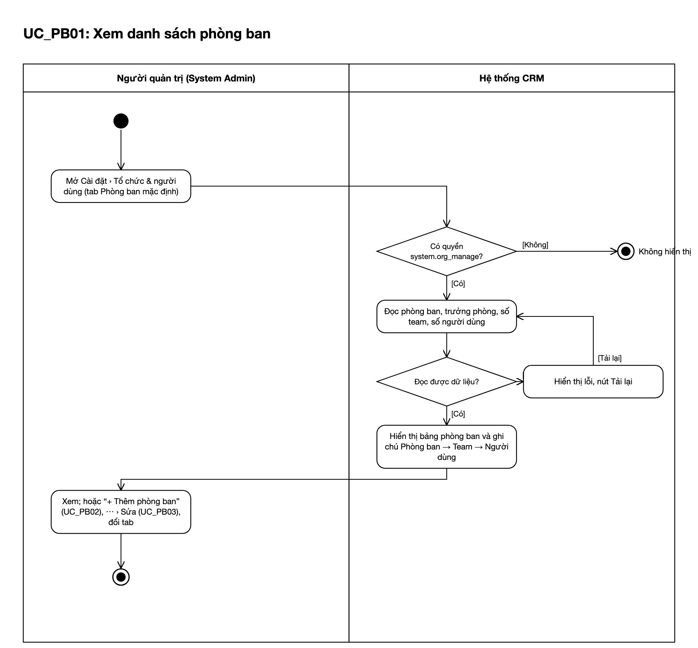
4.2. UC_PB02 — Thêm phòng ban
| Use case: UC_PB02 — Thêm phòng ban | |
|---|---|
| Mục đích: | Khai báo phòng ban mới dùng hệ thống. |
| Mô tả: | Bấm “+ Thêm phòng ban”, nhập tên, mã, mã danh mục GIP, trưởng phòng, mô tả. Phòng ban mới chưa có vai trò, team, người dùng; người quản trị tạo vai trò ở UC_VT02 rồi cấp quyền ở UC_PQ02. |
| Tác nhân: | Chính: Người quản trị (System Admin). Phụ: Hệ thống. |
| Điều kiện trước: | Đang ở tab Phòng ban. |
| Luồng sự kiện chính (Basic flows) | 1. Người quản trị: Bấm “+ Thêm phòng ban” (OP_02). 2. Hệ thống: Mở drawer Thêm phòng ban (trống). 3. Người quản trị: Nhập Tên, Mã, Mã danh mục GIP, Trưởng phòng, Mô tả. 4. Người quản trị: Bấm “Thêm phòng ban” (OP_03). 5. Hệ thống: Hợp lệ, tên và mã không trùng (VR_01 – VR_03)? Có → bước 6. Không → A4. 6. Hệ thống: Tạo phòng ban; ghi nhật ký (BR_08, BR_04). 7. Hệ thống: Đóng drawer, thêm dòng vào bảng, hiển thị MSG_01. |
| Luồng sự kiện phụ (Alternative Flows): | A3 — Bấm “Hủy” / ✕ (tại bước 3, 4): đóng drawer, không lưu → kết thúc. |
| Luồng sự kiện exception (Exception Flows) | A4 — Dữ liệu không hợp lệ / trùng (tại bước 5): lỗi tại trường (MSG_10), giữ dữ liệu → bước 3. A5 — Lỗi hệ thống (tại bước 6): không tạo, MSG_11, giữ dữ liệu → bước 4. |
| Điều kiện sau: | Có phòng ban mới, Đang hoạt động, 0 vai trò, 0 team, 0 người dùng. |
Sơ đồ hoạt động (AD)
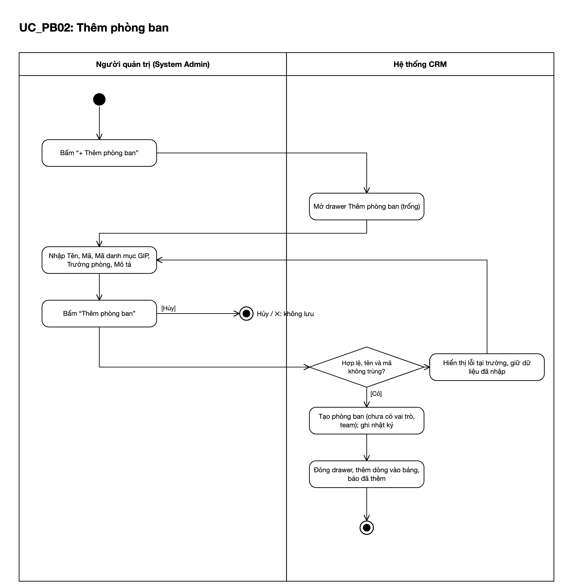
4.3. UC_PB03 — Sửa phòng ban
| Use case: UC_PB03 — Sửa phòng ban | |
|---|---|
| Mục đích: | Cập nhật tên, mã danh mục GIP, trưởng phòng, mô tả. |
| Mô tả: | Từ ⋯ trên dòng phòng ban chọn “Sửa”; mở drawer 02.01.02 ở chế độ sửa: tiêu đề “Sửa phòng ban · {Tên}”, Mã chỉ đọc, nút “Lưu thay đổi”. — Đề xuất (chưa có màn riêng). |
| Tác nhân: | Chính: Người quản trị (System Admin). Phụ: Hệ thống. |
| Điều kiện trước: | Phòng ban tồn tại. |
| Luồng sự kiện chính (Basic flows) | 1. Người quản trị: Bấm ⋯ trên dòng phòng ban, chọn “Sửa” (OP_04). 2. Hệ thống: Mở drawer chế độ sửa với dữ liệu hiện tại; Mã chỉ đọc (BR_07). 3. Người quản trị: Sửa Tên, Mã danh mục GIP, Trưởng phòng, Mô tả. 4. Người quản trị: Bấm “Lưu thay đổi” (OP_03). 5. Hệ thống: Hợp lệ, tên không trùng (VR_01, VR_03)? Có → bước 6. Không → A4. 6. Hệ thống: Lưu; ghi nhật ký cũ → mới (BR_04). 7. Hệ thống: Đóng drawer, cập nhật dòng, hiển thị MSG_01. |
| Luồng sự kiện phụ (Alternative Flows): | A3 — Hủy / ✕ (tại bước 3, 4): đóng drawer, không lưu → kết thúc. |
| Luồng sự kiện exception (Exception Flows) | A4 — Không hợp lệ / trùng (tại bước 5): lỗi tại trường (MSG_10) → bước 3. A5 — Lỗi hệ thống (tại bước 6): MSG_11 → bước 4. A6 — Hai người sửa cùng lúc (tại bước 6): Chưa xác định (Q_08). |
| Điều kiện sau: | Thông tin phòng ban cập nhật; vai trò, team, người dùng của phòng không đổi. |
Sơ đồ hoạt động (AD)
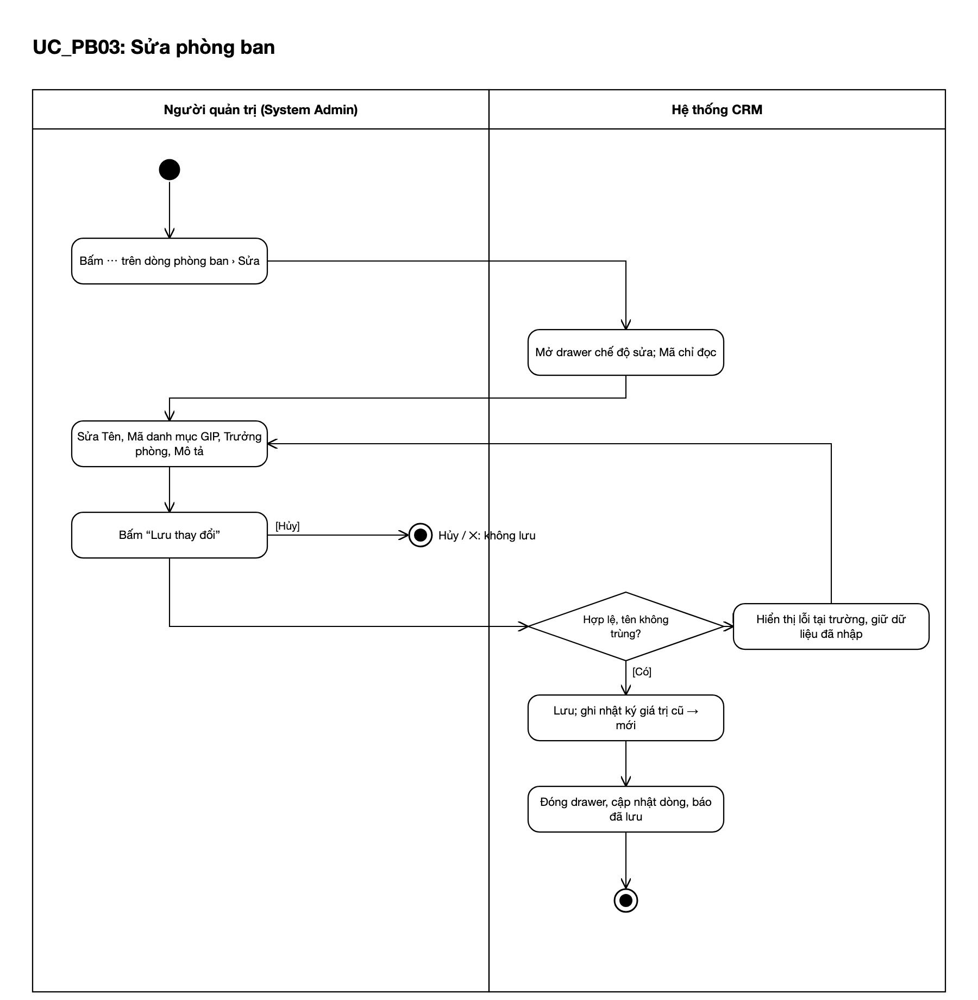
4.4. UC_VT01 — Xem danh mục vai trò
| Use case: UC_VT01 — Xem danh mục vai trò | |
|---|---|
| Mục đích: | Xem các vai trò của từng phòng ban, cấp, phạm vi mặc định, số người dùng và số quyền đang bật. |
| Mô tả: | Tab Vai trò hiển thị bảng vai trò: vai trò (tên, mã), phòng ban (System Admin: “Toàn hệ thống”), cấp, phạm vi mặc định, số người dùng, số quyền đang bật / 67, trạng thái; nút “+ Thêm vai trò” ở đầu bảng. |
| Tác nhân: | Chính: Người quản trị (System Admin). Phụ: Hệ thống. |
| Điều kiện trước: | Là System Admin (BR_01). |
| Luồng sự kiện chính (Basic flows) | 1. Người quản trị: Mở Cài đặt › Tổ chức & người dùng, chọn tab Vai trò (OP_05). 2. Hệ thống: Là System Admin? Có → bước 3. Không → A2. 3. Hệ thống: Đọc vai trò, số người dùng, số quyền đang bật của từng vai trò. 4. Hệ thống: Đọc được? Có → bước 5. Không → A1. 5. Hệ thống: Hiển thị bảng vai trò. 6. Người quản trị: Xem; hoặc “+ Thêm vai trò” / ⋯ › Sửa / ⋯ › Ngừng dùng → UC_VT02; ⋯ › Xem quyền hạn → UC_PQ02 với vai trò đó. |
| Luồng sự kiện phụ (Alternative Flows): | Không có. |
| Luồng sự kiện exception (Exception Flows) | A1 — Lỗi tải (tại bước 4): MSG_11, Tải lại → bước 3. A2 — Không có quyền (tại bước 2): tab Vai trò không hiển thị → kết thúc. |
| Điều kiện sau: | Dữ liệu không thay đổi. |
Sơ đồ hoạt động (AD)
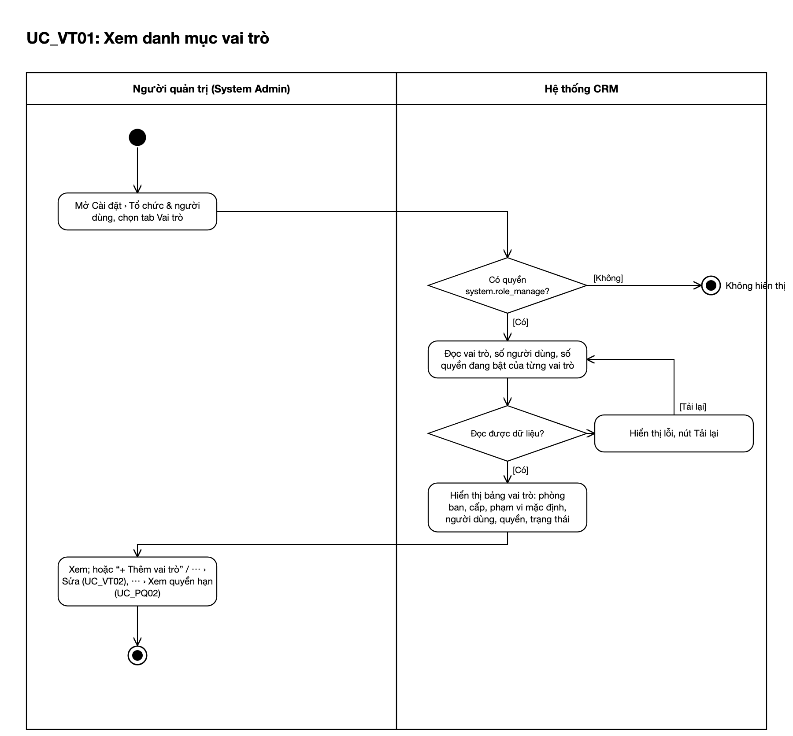
4.5. UC_VT02 — Thêm / sửa / ngừng dùng vai trò
| Use case: UC_VT02 — Thêm / sửa / ngừng dùng vai trò | |
|---|---|
| Mục đích: | Tạo vai trò mới cho một phòng ban, hoặc sửa / ngừng dùng vai trò có sẵn. |
| Mô tả: | Drawer gồm Phòng ban, Tên vai trò, Mã vai trò, Cấp, Phạm vi dữ liệu mặc định, Sao chép quyền từ vai trò, Mô tả. Vai trò mới chưa có quyền nào, trừ khi chọn sao chép (BR_12). Chế độ sửa: Phòng ban, Mã chỉ đọc. — Đề xuất |
| Tác nhân: | Chính: Người quản trị (System Admin). Phụ: Hệ thống; người dùng giữ vai trò (chịu ảnh hưởng khi sửa). |
| Điều kiện trước: | Là System Admin; phòng ban đang hoạt động. |
| Luồng sự kiện chính (Basic flows) | 1. Người quản trị: Bấm “+ Thêm vai trò” hoặc ⋯ › Sửa (OP_06). 2. Hệ thống: Mở drawer; chế độ sửa: Phòng ban, Mã chỉ đọc. 3. Người quản trị: Nhập Phòng ban, Tên, Mã, Cấp, Phạm vi dữ liệu mặc định; chọn vai trò để sao chép quyền (tuỳ chọn); Mô tả. 4. Người quản trị: Bấm “Thêm vai trò” / “Lưu thay đổi” (OP_07). 5. Hệ thống: Hợp lệ, tên và mã không trùng trong phòng (VR_04 – VR_06)? Có → bước 6. Không → A4. 6. Hệ thống: Lưu vai trò; nếu chọn sao chép thì chép quyền đã tích của vai trò nguồn; ghi nhật ký (BR_12, BR_04). 7. Hệ thống: Đóng drawer, cập nhật bảng, hiển thị MSG_02. |
| Luồng sự kiện phụ (Alternative Flows): | A3 — Hủy / ✕ (tại bước 3, 4): không lưu → kết thúc. A7 — ⋯ › Ngừng dùng (tại bước 1): vai trò còn người dùng → chặn, hiển thị “Chuyển {n} người dùng sang vai trò khác trước khi ngừng dùng.” (MSG_10); không còn người dùng → hỏi xác nhận, đổi trạng thái Ngừng dùng, ghi nhật ký (BR_13) → kết thúc. A8 — Sửa Phạm vi dữ liệu mặc định của vai trò đã có quyền (tại bước 3): phạm vi của vai trò đổi theo, có hiệu lực sau khi lưu (BR_29, BR_37). |
| Luồng sự kiện exception (Exception Flows) | A4 — Không hợp lệ / trùng (tại bước 5): lỗi tại trường (MSG_10) → bước 3. A5 — Lỗi hệ thống (tại bước 6): MSG_11 → bước 4. A9 — Sửa Cấp / Phòng ban của System Admin, hoặc chọn cấp Quản trị hệ thống cho vai trò khác (tại bước 5): chặn, lỗi tại trường Cấp (MSG_10) → bước 3 (BR_33, BR_41). |
| Điều kiện sau: | Có vai trò mới hoặc vai trò được cập nhật; quyền chỉnh tiếp ở UC_PQ02. Vai trò Ngừng dùng không chọn được cho người dùng. |
Sơ đồ hoạt động (AD)
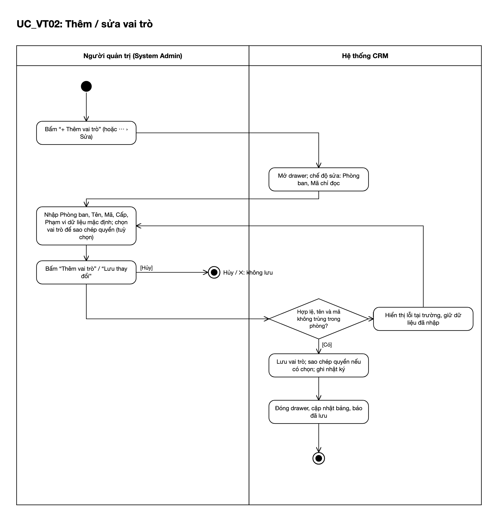
4.6. UC_PB04 — Xem, tìm kiếm, lọc danh sách team
| Use case: UC_PB04 — Xem, tìm kiếm, lọc danh sách team | |
|---|---|
| Mục đích: | Xem và tìm nhanh các team của mọi phòng ban. |
| Mô tả: | Tab Team hiển thị bảng team (team · phòng ban, trưởng nhóm, thành viên cấp Nhân viên, nhóm Telegram, trạng thái), ô tìm kiếm, bộ lọc Phòng ban / Trưởng nhóm / Trạng thái, phân trang và ghi chú phạm vi “Cả team”. |
| Tác nhân: | Chính: Người quản trị (System Admin). Phụ: Hệ thống. |
| Điều kiện trước: | Là System Admin. |
| Luồng sự kiện chính (Basic flows) | 1. Người quản trị: Chọn tab Team; nhập từ khoá / chọn bộ lọc (OP_08, OP_09). 2. Hệ thống: Có quyền? Có → bước 3. Không → A2. 3. Hệ thống: Đọc team theo từ khoá và bộ lọc (BR_05). 4. Hệ thống: Đọc được? Có → bước 5. Không → A1. 5. Hệ thống: Hiển thị bảng team và phân trang. 6. Người quản trị: Xem; hoặc “+ Thêm team” → UC_PB05; ⋯ › Sửa team → UC_PB06. |
| Luồng sự kiện phụ (Alternative Flows): | A10 — Không có team khớp (tại bước 5): bảng hiển thị MSG_12, giữ từ khoá, bộ lọc → bước 1. |
| Luồng sự kiện exception (Exception Flows) | A1 — Lỗi tải (tại bước 4): MSG_11, Tải lại → bước 3. A2 — Không có quyền (tại bước 2): không hiển thị nội dung → kết thúc. |
| Điều kiện sau: | Dữ liệu không thay đổi. |
Sơ đồ hoạt động (AD)
4.7. UC_PB05 — Thêm team
| Use case: UC_PB05 — Thêm team | |
|---|---|
| Mục đích: | Lập team mới của một phòng ban, có trưởng nhóm và thành viên, để xác định phạm vi “Cả team” của trưởng nhóm. |
| Mô tả: | Tab Team › “+ Thêm team”: nhập tên, chọn phòng ban, trưởng nhóm (cấp Quản lý cùng phòng), nhập Chat ID nhóm Telegram. Thành viên không chọn ở đây: người dùng vào team qua trường Team ở drawer người dùng (UC_ND02, UC_ND03). |
| Tác nhân: | Chính: Người quản trị (System Admin). Phụ: Hệ thống; trưởng nhóm, thành viên (chịu ảnh hưởng). |
| Điều kiện trước: | Có ít nhất 1 người dùng cấp Quản lý đang hoạt động, chưa làm trưởng nhóm team khác (VR_08). |
| Luồng sự kiện chính (Basic flows) | 1. Người quản trị: Tab Team: bấm “+ Thêm team” (OP_10). 2. Hệ thống: Mở drawer team trống. 3. Người quản trị: Nhập Tên team; chọn Phòng ban, Trưởng nhóm; nhập Chat ID Telegram. 4. Người quản trị: Bấm “Thêm team” (OP_12). 5. Hệ thống: Hợp lệ (VR_07, VR_08, VR_10)? Có → bước 6. Không → A4. 6. Hệ thống: Tạo team; ghi nhật ký (BR_04). 7. Hệ thống: Đóng drawer, thêm dòng vào bảng team, hiển thị MSG_06. |
| Luồng sự kiện phụ (Alternative Flows): | A3 — Hủy / ✕ (tại bước 3, 4): không lưu → kết thúc. |
| Luồng sự kiện exception (Exception Flows) | A4 — Không hợp lệ (tại bước 5): lỗi tại trường (MSG_10) → bước 3. A5 — Lỗi hệ thống (tại bước 6): MSG_11 → bước 4. |
| Điều kiện sau: | Có team mới, chưa có thành viên; gán thành viên ở trường Team của người dùng (BR_15). |
Sơ đồ hoạt động (AD)
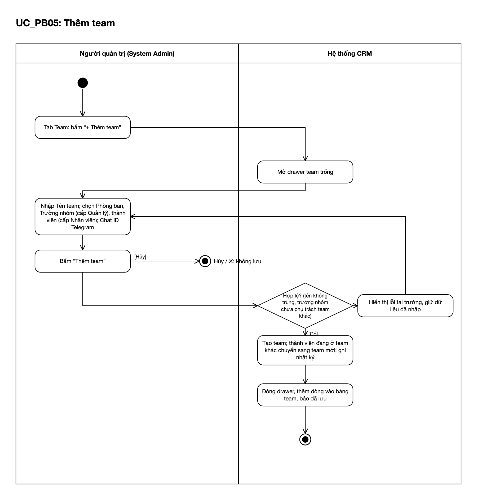
4.8. UC_PB06 — Sửa team
| Use case: UC_PB06 — Sửa team | |
|---|---|
| Mục đích: | Đổi tên, phòng ban, trưởng nhóm, thành viên, nhóm Telegram của team. |
| Mô tả: | Tab Team › ⋯ › Sửa team: drawer mở với dữ liệu hiện tại (tiêu đề “Sửa team · {Tên team}”). Đổi thành viên có hiệu lực ngay với phạm vi của trưởng nhóm. |
| Tác nhân: | Chính: Người quản trị (System Admin). Phụ: Hệ thống; trưởng nhóm, thành viên (chịu ảnh hưởng). |
| Điều kiện trước: | Team tồn tại. |
| Luồng sự kiện chính (Basic flows) | 1. Người quản trị: Tab Team: bấm ⋯ › Sửa team (OP_11). 2. Hệ thống: Mở drawer với dữ liệu hiện tại. 3. Người quản trị: Sửa Tên, Phòng ban, Trưởng nhóm, Chat ID Telegram. 4. Người quản trị: Bấm “Lưu team” (OP_12). 5. Hệ thống: Hợp lệ (VR_07, VR_08, VR_10)? Có → bước 6. Không → A4. 6. Hệ thống: Lưu; trưởng nhóm mới có hiệu lực ngay; ghi nhật ký (BR_26, BR_04). 7. Hệ thống: Đóng drawer, cập nhật dòng team, hiển thị MSG_06. |
| Luồng sự kiện phụ (Alternative Flows): | A3 — Hủy / ✕ (tại bước 3, 4): không lưu → kết thúc. A12 — Đổi Phòng ban khi team còn thành viên (tại bước 4): chặn, yêu cầu gỡ hết thành viên hoặc chuyển họ sang phòng ban mới trước (vì vai trò của thành viên thuộc phòng cũ) — Đề xuất (BR_14). |
| Luồng sự kiện exception (Exception Flows) | A4 — Không hợp lệ (tại bước 5): lỗi tại trường (MSG_10) → bước 3. A5 — Lỗi hệ thống (tại bước 6): MSG_11 → bước 4. A6 — Hai người sửa cùng lúc (tại bước 6): Chưa xác định (Q_08). |
| Điều kiện sau: | Team cập nhật; thành viên bị gỡ không thuộc team nào cho đến khi được gán team khác (VR_15 áp dụng khi sửa người đó). |
Sơ đồ hoạt động (AD)
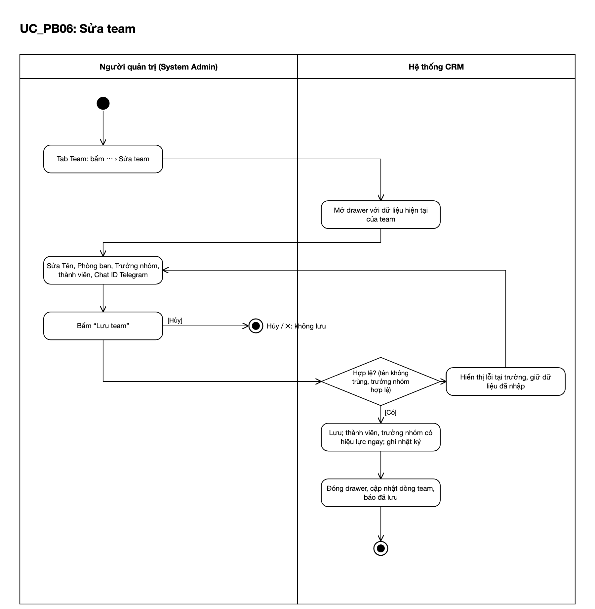
4.9. UC_ND01 — Xem, tìm kiếm, lọc danh sách người dùng
| Use case: UC_ND01 — Xem, tìm kiếm, lọc danh sách người dùng | |
|---|---|
| Mục đích: | Nắm ai đang dùng hệ thống; tìm nhanh một người theo tên, email, mã PIC, vai trò, phòng ban, team, trạng thái. |
| Mô tả: | Tab Người dùng hiển thị bảng người dùng (nhân viên, mã PIC, vai trò, phòng ban · team, Telegram, trạng thái, đăng nhập gần nhất), ô tìm kiếm, 4 bộ lọc, phân trang. |
| Tác nhân: | Chính: Người quản trị (System Admin). Phụ: Hệ thống. |
| Điều kiện trước: | Là System Admin. |
| Luồng sự kiện chính (Basic flows) | 1. Người quản trị: Chọn tab Người dùng; nhập từ khoá / chọn bộ lọc (OP_13, OP_14). 2. Hệ thống: Có quyền? Có → bước 3. Không → A2. 3. Hệ thống: Đọc người dùng theo từ khoá và bộ lọc (BR_05). 4. Hệ thống: Đọc được? Có → bước 5. Không → A1. 5. Hệ thống: Hiển thị bảng người dùng và phân trang. 6. Người quản trị: Xem; hoặc “+ Thêm người dùng” → UC_ND02; ⋯ › Sửa người dùng → UC_ND03; ⋯ › Ngừng hoạt động → UC_ND04. |
| Luồng sự kiện phụ (Alternative Flows): | A10 — Không có người dùng khớp (tại bước 5): MSG_12, giữ từ khoá, bộ lọc → bước 1. |
| Luồng sự kiện exception (Exception Flows) | A1 — Lỗi tải (tại bước 4): MSG_11, Tải lại → bước 3. A2 — Không có quyền (tại bước 2): không hiển thị nội dung → kết thúc. |
| Điều kiện sau: | Dữ liệu không thay đổi. |
Sơ đồ hoạt động (AD)
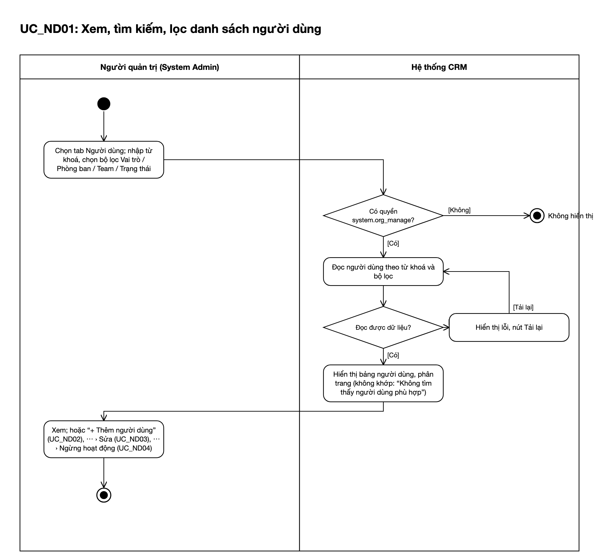
4.10. UC_ND02 — Thêm người dùng
| Use case: UC_ND02 — Thêm người dùng | |
|---|---|
| Mục đích: | Tạo tài khoản cho nhân viên mới với mã PIC, phòng ban, vai trò, team để bắt đầu làm việc. |
| Mô tả: | “+ Thêm người dùng”: nhập họ tên, email, mã PIC; chọn phòng ban rồi vai trò (chỉ vai trò thuộc phòng đó); chọn team (bắt buộc với cấp Nhân viên), Telegram. Tài khoản mới ở trạng thái Chưa kích hoạt. |
| Tác nhân: | Chính: Người quản trị (System Admin). Phụ: Hệ thống. |
| Điều kiện trước: | Đang ở tab Người dùng; phòng ban có ít nhất 1 vai trò đang dùng. |
| Luồng sự kiện chính (Basic flows) | 1. Người quản trị: Bấm “+ Thêm người dùng” (OP_15). 2. Hệ thống: Mở drawer trống. 3. Người quản trị: Nhập Họ tên, Email, Mã PIC; chọn Phòng ban → Vai trò; chọn Team, nhập Telegram. 4. Người quản trị: Bấm “Thêm người dùng” (OP_16). 5. Hệ thống: Hợp lệ (VR_11 – VR_15)? Có → bước 6. Không → A4. 6. Hệ thống: Tạo tài khoản Chưa kích hoạt; ghi nhật ký (BR_19, BR_04). 7. Hệ thống: Đóng drawer, thêm dòng, cập nhật số người của phòng / team / vai trò, hiển thị MSG_03. |
| Luồng sự kiện phụ (Alternative Flows): | A3 — Hủy / ✕ (tại bước 3, 4): không lưu → kết thúc. A13 — Đổi Phòng ban (tại bước 3): xoá Vai trò, Team đã chọn; danh sách Vai trò, Team lọc theo phòng mới. Chọn Phòng ban “Không thuộc phòng ban” → Vai trò chỉ còn System Admin. A14 — Chọn vai trò cấp Trưởng phòng hoặc System Admin (tại bước 3): trường Team khoá, hiển thị “—” (BR_11). |
| Luồng sự kiện exception (Exception Flows) | A4 — Không hợp lệ / trùng (tại bước 5): lỗi tại trường (MSG_10), giữ dữ liệu → bước 3. A5 — Lỗi hệ thống (tại bước 6): MSG_11 → bước 4. |
| Điều kiện sau: | Có người dùng mới, Chưa kích hoạt; nếu cấp Nhân viên thì là thành viên team đã chọn, trưởng nhóm thấy dữ liệu của người đó (BR_16). Cách nhận mật khẩu / kích hoạt: Q_06. |
Sơ đồ hoạt động (AD)
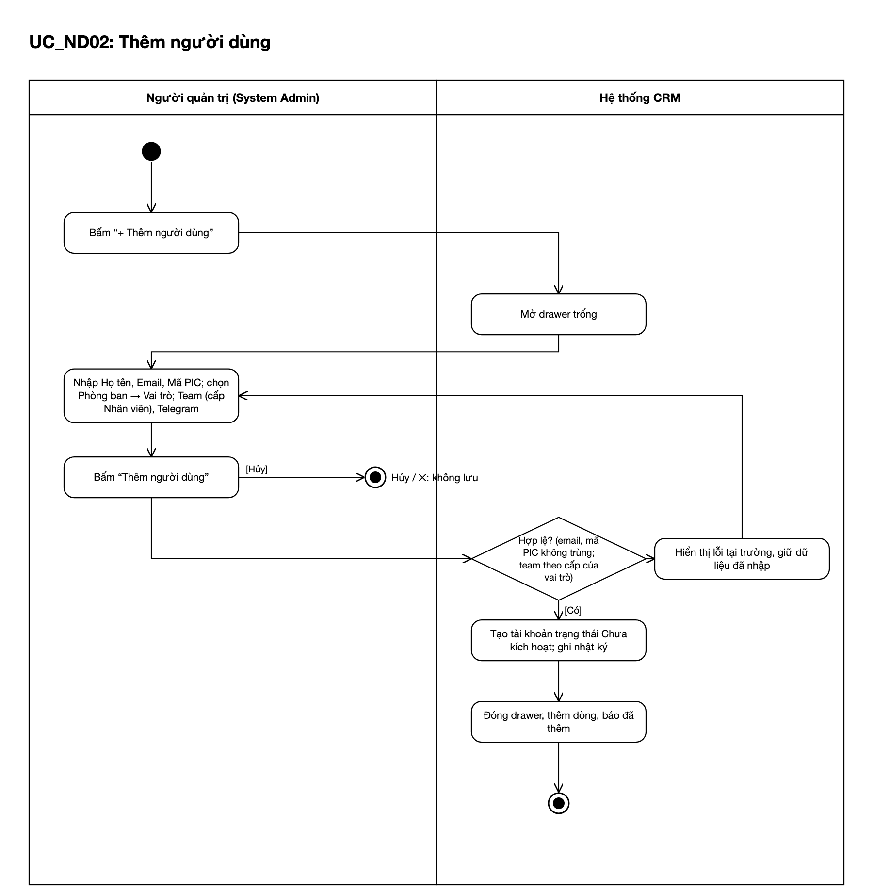
4.11. UC_ND03 — Sửa người dùng
| Use case: UC_ND03 — Sửa người dùng | |
|---|---|
| Mục đích: | Cập nhật thông tin, đổi phòng ban, vai trò hoặc team của một người. |
| Mô tả: | ⋯ › Sửa người dùng: drawer với dữ liệu hiện tại; Mã PIC, Trạng thái, Đăng nhập gần nhất chỉ đọc. Đổi vai trò / team có hiệu lực từ thao tác kế tiếp với phạm vi dữ liệu của người đó và của trưởng nhóm liên quan. |
| Tác nhân: | Chính: Người quản trị (System Admin). Phụ: Hệ thống; người dùng được sửa, trưởng nhóm cũ / mới (chịu ảnh hưởng). |
| Điều kiện trước: | Người dùng tồn tại. |
| Luồng sự kiện chính (Basic flows) | 1. Người quản trị: Bấm ⋯ cuối dòng, chọn “Sửa người dùng” (OP_17). 2. Hệ thống: Mở drawer với dữ liệu hiện tại; Mã PIC, Trạng thái, Đăng nhập gần nhất chỉ đọc (BR_18). 3. Người quản trị: Sửa Họ tên, Email, Phòng ban, Vai trò, Team, Telegram. 4. Người quản trị: Bấm “Lưu thay đổi” (OP_18). 5. Hệ thống: Hợp lệ (VR_11, VR_12, VR_14 – VR_17)? Có → bước 6. Không → A4 / A15. 6. Hệ thống: Lưu; vai trò, team mới có hiệu lực từ thao tác kế tiếp; ghi nhật ký cũ → mới (BR_26, BR_04). 7. Hệ thống: Đóng drawer, cập nhật dòng, hiển thị MSG_04. |
| Luồng sự kiện phụ (Alternative Flows): | A3 — Hủy / ✕ (tại bước 3, 4): không lưu → kết thúc. A13 — Đổi Phòng ban (tại bước 3): như UC_ND02. A16 — Bấm “Ngừng hoạt động” trong drawer (tại bước 3): chuyển sang UC_ND04; thay đổi đang nhập không được lưu. |
| Luồng sự kiện exception (Exception Flows) | A4 — Không hợp lệ / trùng (tại bước 5): lỗi tại trường (MSG_10) → bước 3. A15 — Làm mất System Admin đang hoạt động cuối cùng, System Admin tự đổi mình sang vai trò khác, hoặc đổi vai trò / chuyển team của trưởng nhóm team còn thành viên (tại bước 5): chặn lưu, lỗi tại trường Vai trò / Team (MSG_10) → bước 3 (BR_22, BR_23, BR_34). A5 — Lỗi hệ thống (tại bước 6): MSG_11 → bước 4. A6 — Hai người sửa cùng lúc: Chưa xác định (Q_08). |
| Điều kiện sau: | Thông tin người dùng cập nhật. Phiên đang đăng nhập nhận quyền mới khi nào: Q_09. Bản ghi cũ khi người dùng chuyển team: Q_03. |
Sơ đồ hoạt động (AD)
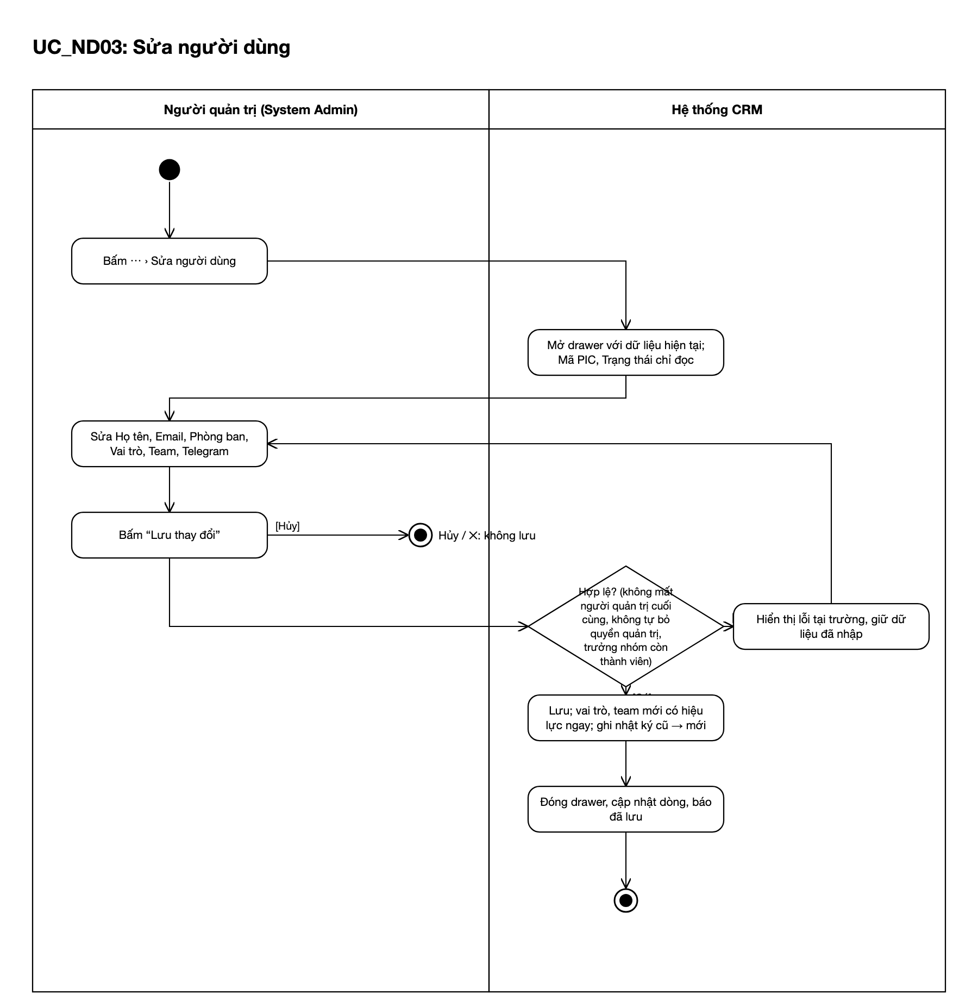
4.12. UC_ND04 — Ngừng hoạt động người dùng
| Use case: UC_ND04 — Ngừng hoạt động người dùng | |
|---|---|
| Mục đích: | Khoá tài khoản người nghỉ việc mà không mất lịch sử, và giao lại deal đang mở để không khách hàng nào bị bỏ sót. |
| Mô tả: | Chọn “Ngừng hoạt động” từ ⋯ hoặc drawer sửa. Hộp thoại hiển thị cảnh báo, số deal đang phụ trách và ô chọn người nhận. Xác nhận → chuyển PIC các deal đang mở, đổi trạng thái, người đó không đăng nhập được nữa. — Đề xuất (Q_10). |
| Tác nhân: | Chính: Người quản trị (System Admin). Phụ: Hệ thống; người bị ngừng hoạt động, người nhận deal (chịu ảnh hưởng). |
| Điều kiện trước: | Người dùng Chưa kích hoạt hoặc Đang hoạt động. |
| Luồng sự kiện chính (Basic flows) | 1. Người quản trị: Chọn “Ngừng hoạt động” (menu ⋯ hoặc drawer sửa) (OP_19). 2. Hệ thống: Mở hộp thoại: cảnh báo, số deal đang phụ trách, ô chọn người nhận (BR_21). 3. Người quản trị: Chọn người nhận các deal đang mở. 4. Người quản trị: Bấm “Ngừng hoạt động” (OP_20). 5. Hệ thống: Được phép (không phải System Admin đang hoạt động cuối cùng; không là trưởng nhóm team còn thành viên; đã chọn người nhận khi còn deal đang mở — BR_22, BR_23, VR_18)? Có → bước 6. Không → A17. 6. Hệ thống: Chuyển PIC các deal đang mở sang người nhận; ghi nhật ký từng deal (BR_21). 7. Hệ thống: Đổi trạng thái Ngừng hoạt động; ghi nhật ký (BR_19, BR_04). 8. Hệ thống: Đóng hộp thoại, hiển thị MSG_05. |
| Luồng sự kiện phụ (Alternative Flows): | A18 — Hủy / ✕ (tại bước 3, 4): trạng thái, PIC giữ nguyên → kết thúc. |
| Luồng sự kiện exception (Exception Flows) | A17 — Không được phép (tại bước 5): hiển thị lý do (MSG_10) → bước 3. A5 — Lỗi hệ thống (tại bước 6, 7): không chuyển deal nào, trạng thái giữ nguyên (BR_03), MSG_11 → bước 4. |
| Điều kiện sau: | Tài khoản Ngừng hoạt động; không còn trong danh sách chọn người dùng (BR_24); deal đang mở có PIC mới; deal đã đóng, nhật ký giữ nguyên (BR_20). Khách hàng có AM Owner là người này: Q_10. |
Sơ đồ hoạt động (AD)
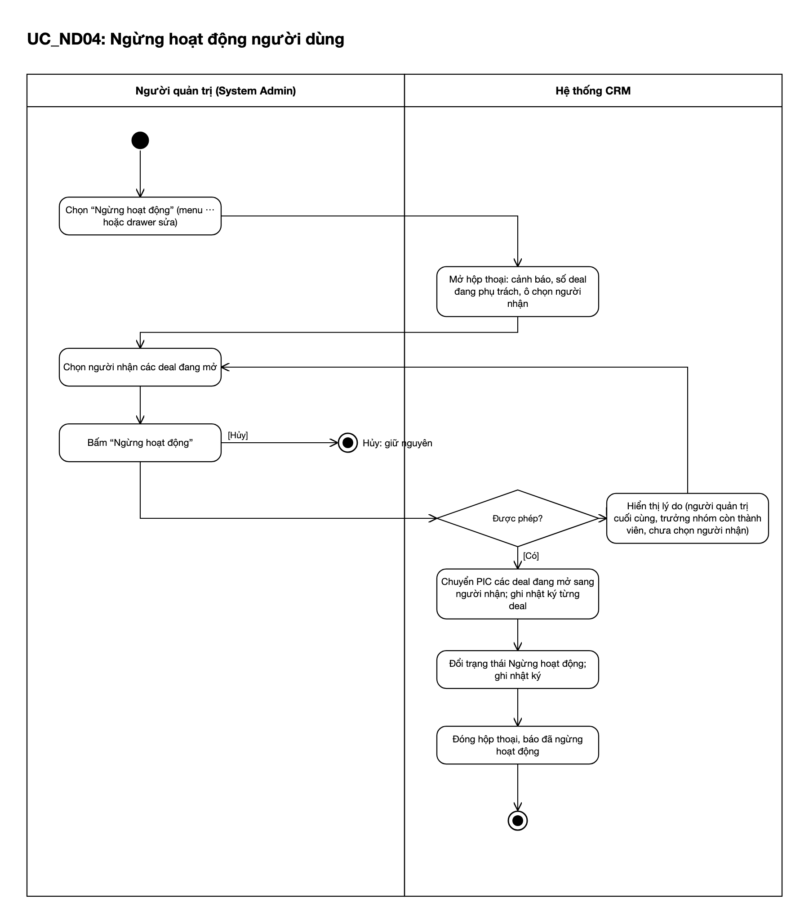
5. GIAO DIỆN VÀ HÀNH VI
5.1. Mockup
Đường dẫn truy cập: Sidebar › Cài đặt hệ thống › menu Cài đặt › nhóm Tổ chức: Tổ chức & người dùng · Phân quyền. Mỗi màn bên dưới có ảnh chụp kèm số chú thích; số trong cột "Thông tin" khớp với số trên ảnh.
| Số màn | Màn hình | Mã SCR | Node Figma |
|---|---|---|---|
| 02.01.01 | Tổ chức & người dùng · Tab Phòng ban | SCR_ADM_DEP_01 | 667:61158 |
| 02.01.02 | Thêm phòng ban (drawer) | SCR_ADM_DEP_02 | 667:61619 |
| 02.01.03 | Tổ chức & người dùng · Tab Vai trò | SCR_ADM_ROLE_01 | 718:9885 |
| 02.01.04 | Thêm vai trò (drawer) | SCR_ADM_ROLE_02 | 718:11183 |
| 02.01.05 | Tổ chức & người dùng · Tab Team | SCR_ADM_DEP_03 | 667:61675 |
| 02.01.06 | Sửa team (drawer) | SCR_ADM_DEP_04 | 667:61878 |
| 02.01.07 | Thêm team (drawer) | SCR_ADM_DEP_04 | 667:61814 |
| 02.01.08 | Tổ chức & người dùng · Tab Người dùng | SCR_ADM_USR_01 | 667:61528 |
| 02.01.09 | Menu thao tác người dùng | SCR_ADM_USR_02 | 667:61720 |
| 02.01.10 | Thêm người dùng (drawer) | SCR_ADM_USR_03 | 667:61418 |
| 02.01.11 | Sửa người dùng (drawer) | SCR_ADM_USR_04 | 667:61303 |
| 02.01.12 | Ngừng hoạt động (hộp thoại) | SCR_ADM_USR_05 | 667:61202 |
5.1.1. 02.01.01 — Tổ chức & người dùng · tab Phòng ban (SCR_ADM_DEP_01)
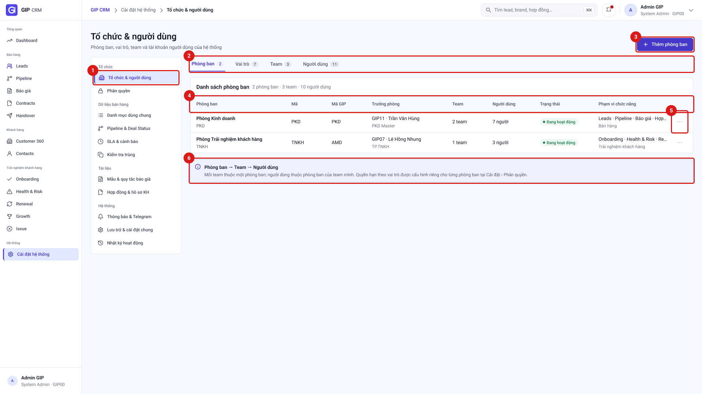
| Thông tin | Kiểu hiển thị | Bắt buộc | Mô tả |
|---|---|---|---|
| (1) Tổ chức & người dùng | Menu item | Onclick mở màn Tổ chức & người dùng, tab Phòng ban; mục đang chọn được tô nổi. Nằm đầu nhóm Tổ chức, trên Phân quyền. | |
| (2) Tab Phòng ban · Vai trò · Team · Người dùng | Tab | Hiển thị số lượng trên mỗi tab. Onclick chuyển tab (UC_PB01, UC_VT01, UC_PB04, UC_ND01). | |
| (3) + Thêm phòng ban | Button | Onclick mở drawer Thêm phòng ban (UC_PB02). | |
| (4) Bảng phòng ban | Table | Cột: Phòng ban (tên, mã) · Mã · Mã GIP · Trưởng phòng (mã PIC · tên, vai trò) · Team · Người dùng · Trạng thái · Phạm vi chức năng (mô tả). - Số team, số người dùng tính theo BR_09. - Phòng ban chưa có trưởng phòng hiển thị “—”. |
|
| (5) ⋯ | Menu | Onclick mở menu “Sửa” (UC_PB03). | |
| (6) Ghi chú Phòng ban → Team → Người dùng | Notice | Hiển thị: mỗi team thuộc một phòng ban; người dùng thuộc phòng ban, giữ một vai trò của phòng đó. |
5.1.2. 02.01.02 — Drawer Thêm / sửa phòng ban (SCR_ADM_DEP_02)
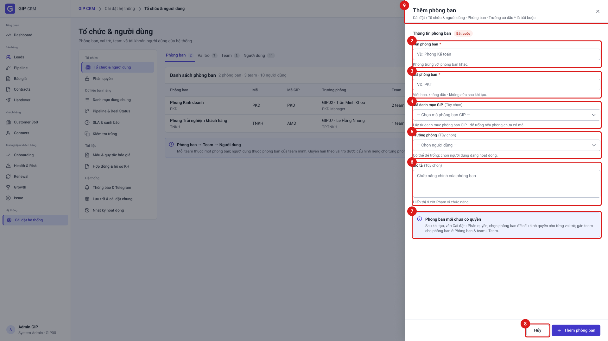
| Thông tin | Kiểu hiển thị | Bắt buộc | Mô tả |
|---|---|---|---|
| (1) Tiêu đề | Label | “Thêm phòng ban” / “Sửa phòng ban · {Tên}”; dòng phụ “Cài đặt › Tổ chức & người dùng · Phòng ban · Trường có dấu * là bắt buộc”. ✕ → như Hủy (A3). | |
| (2) Tên phòng ban | Textbox | x | Cho phép người dùng nhập tên phòng ban. Không trùng phòng ban khác (VR_01). |
| (3) Mã phòng ban | Textbox | x | Viết hoa, không dấu (VR_02). Chỉ đọc ở chế độ sửa (BR_07). |
| (4) Mã danh mục GIP | Drop list | Cho phép người dùng chọn mã phòng ban trong danh mục GIP (VD PKD, AMD). Để trống nếu phòng chưa có mã. | |
| (5) Trưởng phòng | Drop list | Danh sách người dùng đang hoạt động (VR_03). Mặc định: trống. | |
| (6) Mô tả | Textbox | Chức năng chính của phòng; hiển thị ở cột Phạm vi chức năng. | |
| (7) Ghi chú phòng ban mới | Notice | “Phòng ban mới chưa có quyền — sau khi tạo, thêm vai trò ở tab Vai trò rồi cấu hình quyền ở Phân quyền.” | |
| (8) Hủy | Button | Đóng drawer, không lưu (A3). | |
| (9) Thêm phòng ban / Lưu thay đổi | Button | Onclick kiểm tra VR_01 – VR_03 rồi lưu (UC_PB02 bước 5 – 7). |
5.1.3. 02.01.03 — Tổ chức & người dùng · tab Vai trò (SCR_ADM_ROLE_01)
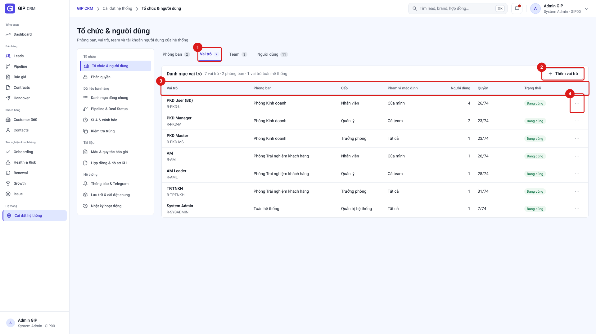
| Thông tin | Kiểu hiển thị | Bắt buộc | Mô tả |
|---|---|---|---|
| (1) Tab Vai trò | Tab | Tab đang chọn; số = số vai trò. | |
| (2) + Thêm vai trò | Button | Onclick mở drawer Thêm vai trò (UC_VT02). | |
| (3) Bảng vai trò | Table | Cột: Vai trò (tên, mã) · Phòng ban · Cấp · Phạm vi mặc định · Người dùng · Quyền (đang bật / 67) · Trạng thái. Dữ liệu khởi tạo: bảng 5.2.2. | |
| (4) ⋯ | Menu | Sửa · Xem quyền hạn (mở UC_PQ02 với vai trò này) · Ngừng dùng (A7). |
5.1.4. 02.01.04 — Drawer Thêm / sửa vai trò (SCR_ADM_ROLE_02)
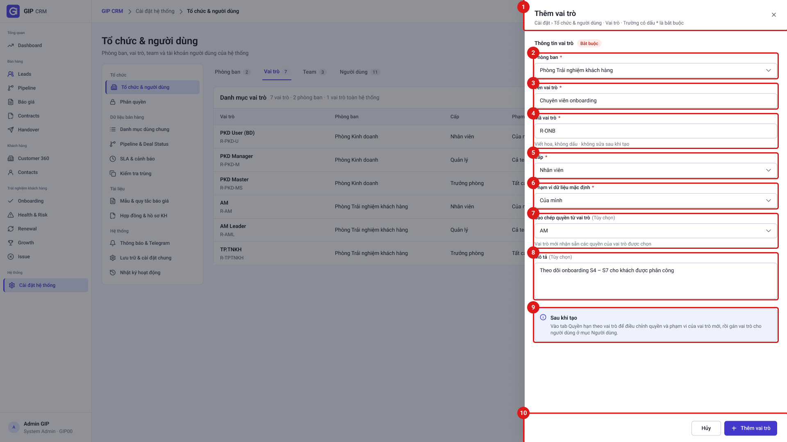
| Thông tin | Kiểu hiển thị | Bắt buộc | Mô tả |
|---|---|---|---|
| (1) Tiêu đề | Label | “Thêm vai trò” / “Sửa vai trò · {Tên}”; dòng phụ “Cài đặt › Tổ chức & người dùng · Vai trò · Trường có dấu * là bắt buộc”. | |
| (2) Phòng ban | Drop list | x | Danh sách phòng ban đang hoạt động. Chỉ đọc ở chế độ sửa. |
| (3) Tên vai trò | Textbox | x | Không trùng tên vai trò khác cùng phòng (VR_04). |
| (4) Mã vai trò | Textbox | x | Dạng R- + chữ hoa không dấu, không trùng (VR_05). Chỉ đọc ở chế độ sửa. |
| (5) Cấp | Drop list | x | Nhân viên · Quản lý · Trưởng phòng. Cấp quyết định team (BR_11). |
| (6) Phạm vi dữ liệu mặc định | Drop list | x | Của mình · Cả team · Tất cả · Chỉ xem (BR_29). |
| (7) Sao chép quyền từ vai trò | Drop list | Danh sách vai trò đang dùng; chọn → vai trò mới nhận sẵn các quyền đã tích của vai trò đó (BR_12). Chỉ ở chế độ thêm. | |
| (8) Mô tả | Textbox | Mô tả công việc của vai trò. | |
| (9) Ghi chú sau khi tạo | Notice | “Vào tab Quyền hạn theo vai trò để điều chỉnh quyền và phạm vi của vai trò mới, rồi gán vai trò cho người dùng ở tab Người dùng.” | |
| (10) Hủy · Thêm vai trò / Lưu thay đổi | Button | Hủy: không lưu (A3). Thêm / Lưu: kiểm tra VR_04 – VR_06 rồi lưu (UC_VT02 bước 5 – 7). |
5.1.5. 02.01.05 — Tổ chức & người dùng · tab Team (SCR_ADM_DEP_03)
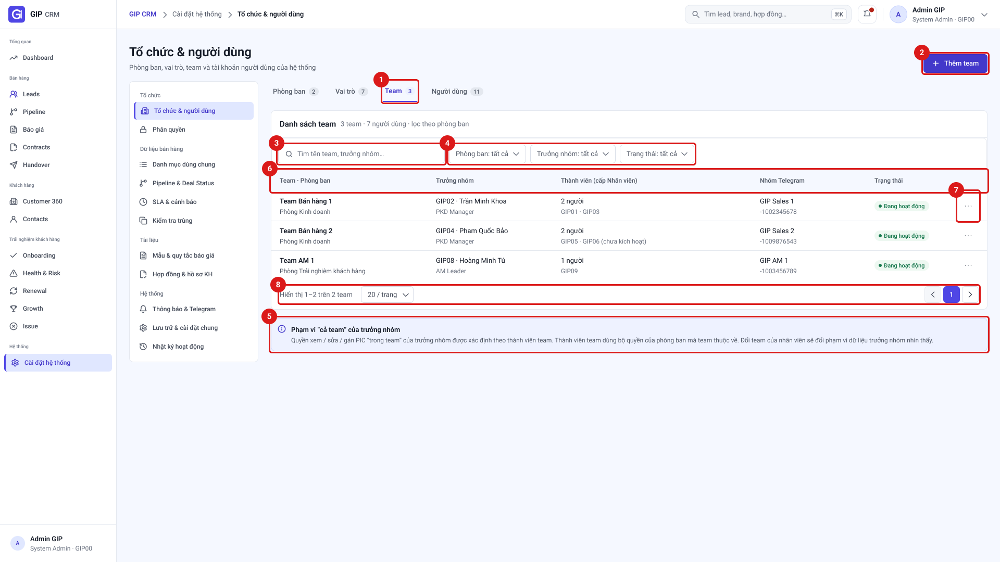
| Thông tin | Kiểu hiển thị | Bắt buộc | Mô tả |
|---|---|---|---|
| (1) Tab Team | Tab | Tab đang chọn; số = số team. | |
| (2) + Thêm team | Button | Onclick mở drawer Thêm team (UC_PB05). | |
| (3) Tìm kiếm | Search | Tìm theo tên team, tên / mã PIC trưởng nhóm; khớp một phần, không phân biệt hoa / thường (BR_05). | |
| (4) Bộ lọc Phòng ban · Trưởng nhóm · Trạng thái | Drop list | Mặc định “tất cả”; kết hợp với nhau và với từ khoá; đổi → về trang 1 (BR_05). | |
| (5) Ghi chú phạm vi “Cả team” | Notice | “Quyền xem / sửa / gán PIC trong team của trưởng nhóm được xác định theo thành viên team.” (BR_16). | |
| (6) Bảng team | Table | Cột: Team · Phòng ban · Trưởng nhóm (mã PIC · tên, vai trò) · Thành viên cấp Nhân viên (số người, mã PIC) · Nhóm Telegram (tên, Chat ID) · Trạng thái. Không khớp → MSG_12. | |
| (7) ⋯ | Menu | “Sửa team” (UC_PB06). | |
| (8) Phân trang | Label | 20 dòng / trang, chọn 10 – 100 (BR_05). |
5.1.6. 02.01.06 · 02.01.07 — Drawer Sửa team / Thêm team (SCR_ADM_DEP_04)
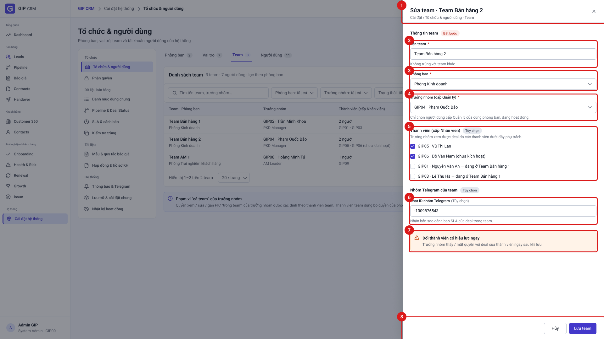
| Thông tin | Kiểu hiển thị | Bắt buộc | Mô tả |
|---|---|---|---|
| (1) Tiêu đề | Label | “Sửa team · {Tên team}” / “Thêm team”; dòng phụ “Cài đặt › Tổ chức & người dùng · Team”. | |
| (2) Tên team | Textbox | x | Không trùng team khác (VR_07). |
| (3) Phòng ban | Drop list | x | Phòng ban đang hoạt động (VR_10). Đổi khi team còn thành viên: A12. |
| (4) Trưởng nhóm (cấp Quản lý) | Drop list | x | Người dùng cấp Quản lý của cùng phòng ban, đang hoạt động, chưa làm trưởng nhóm team khác (VR_08). |
| (6) Chat ID nhóm Telegram | Textbox | Nhóm nhận bản sao cảnh báo SLA của deal trong team. | |
| (7) Ghi chú hiệu lực | Notice | “Đổi thành viên có hiệu lực ngay — trưởng nhóm thấy / mất quyền với dữ liệu của thành viên ngay sau khi lưu.” | |
| (8) Hủy · Lưu team / Thêm team | Button | Hủy: không lưu. Lưu: kiểm tra VR_07, VR_08, VR_10 rồi lưu (UC_PB05 / UC_PB06 bước 5 – 7). |
5.1.7. 02.01.08 — Tổ chức & người dùng · tab Người dùng (SCR_ADM_USR_01)
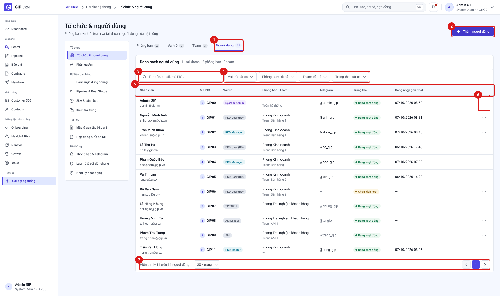
| Thông tin | Kiểu hiển thị | Bắt buộc | Mô tả |
|---|---|---|---|
| (1) Tab Người dùng | Tab | Tab đang chọn; số = số tài khoản. | |
| (2) + Thêm người dùng | Button | Onclick mở drawer Thêm người dùng (UC_ND02). | |
| (3) Tìm kiếm | Search | Tìm theo tên, email, mã PIC (BR_05). | |
| (4) Bộ lọc Vai trò · Phòng ban · Team · Trạng thái | Drop list | Mặc định “tất cả”; kết hợp với nhau và với từ khoá (BR_05). | |
| (5) Bảng người dùng | Table | Cột: Nhân viên (tên, email) · Mã PIC · Vai trò · Phòng ban · Team · Telegram · Trạng thái (Chưa kích hoạt / Đang hoạt động / Ngừng hoạt động) · Đăng nhập gần nhất. - Người không thuộc team hiển thị “—”. - Không khớp → MSG_12. |
|
| (6) ⋯ | Menu | Sửa người dùng · Ngừng hoạt động (02.01.09). | |
| (7) Phân trang | Label | Như tab Team. |
5.1.8. 02.01.09 — Menu thao tác người dùng (SCR_ADM_USR_02)
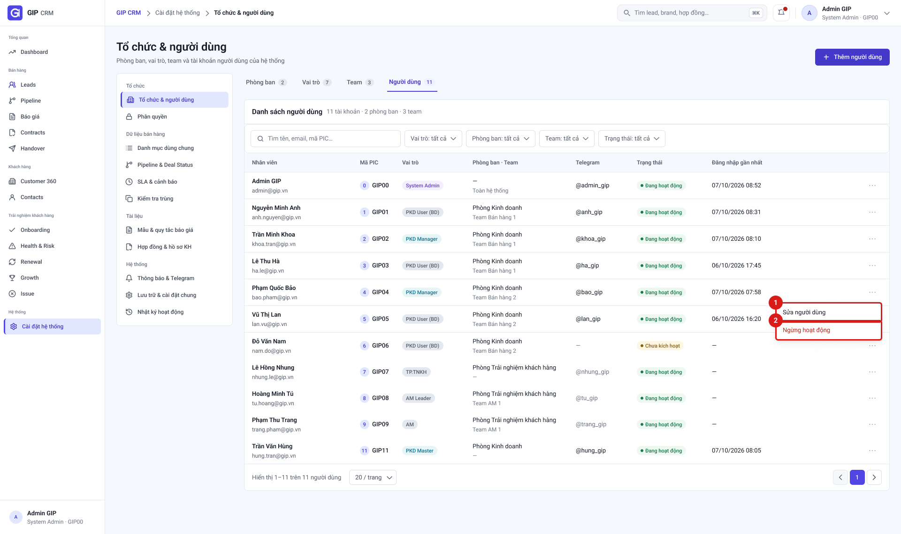
| Thông tin | Kiểu hiển thị | Bắt buộc | Mô tả |
|---|---|---|---|
| (1) Sửa người dùng | Menu item | Onclick mở drawer sửa (UC_ND03). | |
| (2) Ngừng hoạt động | Menu item | Chữ đỏ. Onclick mở hộp thoại ngừng hoạt động (UC_ND04). Ẩn khi người dùng đã Ngừng hoạt động. |
5.1.9. 02.01.10 · 02.01.11 — Drawer Thêm / sửa người dùng (SCR_ADM_USR_03, SCR_ADM_USR_04)
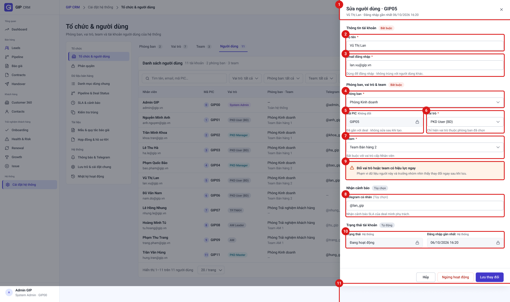
| Thông tin | Kiểu hiển thị | Bắt buộc | Mô tả |
|---|---|---|---|
| (1) Tiêu đề | Label | “Thêm người dùng” (dòng phụ “Cài đặt › Tổ chức & người dùng · Người dùng · Trường có dấu * là bắt buộc”) / “Sửa người dùng” (dòng phụ: mã PIC · họ tên · đăng nhập gần nhất). | |
| (2) Họ tên | Textbox | x | VR_11. |
| (3) Email đăng nhập | Textbox | x | Dùng để đăng nhập; không trùng (VR_12). |
| (4) Phòng ban | Drop list | x | Phòng ban đang hoạt động và mục “Không thuộc phòng ban” (chỉ dùng cho System Admin). Đổi → xoá Vai trò, Team đã chọn (A13). |
| (5) Mã PIC | Textbox | x | Duy nhất; hiển thị trên thẻ deal và dropdown PIC (VR_13). Chỉ đọc khi sửa (BR_18). |
| (6) Vai trò | Drop list | x | Chỉ vai trò đang dùng thuộc phòng ban đã chọn (VR_14). |
| (7) Team | Drop list | x (vai trò cấp Nhân viên) | Team của phòng ban đã chọn (VR_15). Vai trò cấp Quản lý: tuỳ chọn; Trưởng phòng, System Admin: khoá, “—” (BR_11, A14). |
| (8) Telegram cá nhân | Textbox | @username; nhận cảnh báo SLA của deal mình phụ trách. | |
| (9) Ghi chú | Notice | Thêm: “Tài khoản ở trạng thái Chưa kích hoạt cho đến lần đăng nhập đầu tiên.” Sửa: “Đổi vai trò hoặc team có hiệu lực ngay — phạm vi dữ liệu của người này và trưởng nhóm thay đổi ngay sau khi lưu.” | |
| (10) Trạng thái · Đăng nhập gần nhất | Label | Chỉ ở chế độ sửa, chỉ đọc. | |
| (11) Hủy · Ngừng hoạt động · Thêm người dùng / Lưu thay đổi | Button | Hủy: không lưu. Ngừng hoạt động (chỉ khi sửa): sang UC_ND04 (A16). Thêm / Lưu: kiểm tra VR_11 – VR_17 rồi lưu. |
5.1.10. 02.01.12 — Hộp thoại ngừng hoạt động (SCR_ADM_USR_05)
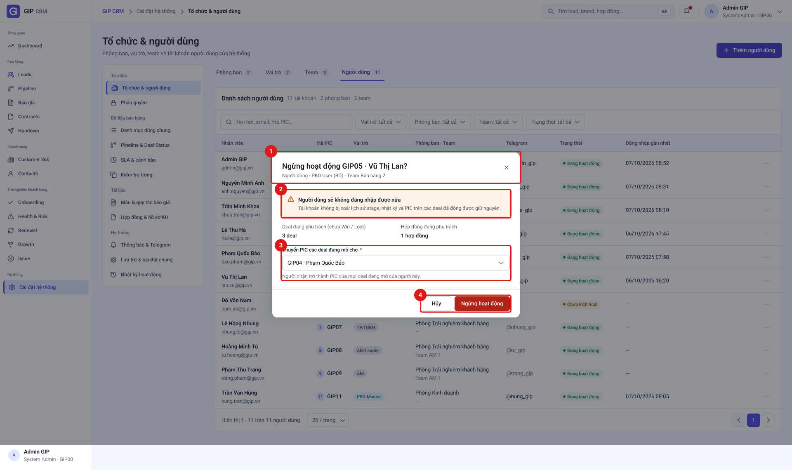
| Thông tin | Kiểu hiển thị | Bắt buộc | Mô tả |
|---|---|---|---|
| (1) Tiêu đề | Label | “Ngừng hoạt động {Mã PIC} · {Họ tên}?”; dòng phụ: vai trò · team. | |
| (2) Cảnh báo | Notice | “Người dùng sẽ không đăng nhập được nữa. Tài khoản không bị xoá: lịch sử stage, nhật ký và PIC trên các deal đã đóng được giữ nguyên.” | |
| (3) Chuyển PIC các deal đang mở cho | Drop list | x (khi còn deal đang mở) | Người dùng đang hoạt động, khác người bị ngừng (VR_18). Người nhận trở thành PIC của mọi deal đang mở của người này. |
| (4) Hủy · Ngừng hoạt động | Button | Hủy: giữ nguyên (A18). Ngừng hoạt động (đỏ): UC_ND04 bước 5 – 8. |
5.1.13. Sơ đồ điều hướng
| Từ | Thao tác | Đến |
|---|---|---|
| Menu Cài đặt › Tổ chức & người dùng | Onclick | 02.01.01 (tab Phòng ban) |
| Tab Phòng ban / Vai trò / Team / Người dùng | Onclick | 02.01.01 / 02.01.03 / 02.01.05 / 02.01.08 |
| 02.01.01 “+ Thêm phòng ban”, ⋯ › Sửa | Onclick | 02.01.02 → đóng về 02.01.01 |
| 02.01.03 “+ Thêm vai trò”, ⋯ › Sửa | Onclick | 02.01.04 → đóng về 02.01.03 |
| 02.01.03 ⋯ › Xem quyền hạn | Onclick | 02.01.13 với vai trò đó |
| 02.01.05 “+ Thêm team” / ⋯ › Sửa team | Onclick | 02.01.07 / 02.01.06 → đóng về 02.01.05 |
| 02.01.08 “+ Thêm người dùng” | Onclick | 02.01.10 → đóng về 02.01.08 |
| 02.01.08 ⋯ | Onclick | 02.01.09 → Sửa: 02.01.11 · Ngừng hoạt động: 02.01.12 |
| 02.01.11 “Ngừng hoạt động” | Onclick | 02.01.12 |
5.2. Đặc tả trường dữ liệu
5.2.1. Phòng ban
| Mã trường | Tên trường | Thành phần UI | Kiểu dữ liệu / Độ dài | Bắt buộc | Giá trị mặc định | Nguồn / Danh sách giá trị | Điều kiện hiển thị / Cho sửa | Validation tham chiếu |
|---|---|---|---|---|---|---|---|---|
| D01 | Tên phòng ban | Textbox | Văn bản; độ dài: Chưa xác định | Có | Trống | Người dùng nhập | Sửa được | VR_01 |
| D02 | Mã phòng ban | Textbox | Chữ hoa, chữ số | Có | Trống | Người dùng nhập | Chỉ đọc khi sửa | VR_02 |
| D03 | Mã danh mục GIP | Drop list | Mã | Không | Trống | Danh mục phòng ban GIP (VD BOD, PKD, AMD, ACC) | Sửa được | — |
| D04 | Trưởng phòng | Drop list | Người dùng | Không | Trống | Người dùng đang hoạt động | Sửa được | VR_03 |
| D05 | Mô tả | Textbox | Văn bản | Không | Trống | Người dùng nhập | Sửa được | — |
| D06 | Trạng thái | Label | Đang hoạt động | — | Đang hoạt động | Hệ thống | Chỉ đọc | — |
| D07 | Số team, số người dùng | Label | Số | — | — | Hệ thống tính (BR_09) | Chỉ đọc | — |
Phòng ban khởi tạo (BR_06)
| Mã | Phòng ban | Mã danh mục GIP | Phạm vi chức năng |
|---|---|---|---|
| PKD | Phòng Kinh doanh | PKD | Lead, Pipeline, Báo giá, Hợp đồng, nộp bàn giao |
| TNKH | Phòng Trải nghiệm khách hàng | AMD | Customer 360, bàn giao, onboarding, sức khoẻ, gia hạn, tăng trưởng |
5.2.2. Vai trò
| Mã trường | Tên trường | Thành phần UI | Kiểu dữ liệu | Bắt buộc | Giá trị mặc định | Nguồn / Danh sách giá trị | Điều kiện hiển thị / Cho sửa | Validation tham chiếu |
|---|---|---|---|---|---|---|---|---|
| V01 | Phòng ban | Drop list | Phòng ban | Có (trừ System Admin) | Trống | Phòng ban đang hoạt động | Chỉ đọc khi sửa | VR_06 |
| V02 | Tên vai trò | Textbox | Văn bản | Có | Trống | Người dùng nhập | Sửa được | VR_04 |
| V03 | Mã vai trò | Textbox | R- + chữ hoa |
Có | Trống | Người dùng nhập | Chỉ đọc khi sửa | VR_05 |
| V04 | Cấp | Drop list | Danh sách | Có | Trống | Nhân viên · Quản lý · Trưởng phòng (cấp Quản trị hệ thống chỉ có System Admin, không chọn được) | Sửa được; System Admin chỉ đọc | VR_06 |
| V05 | Phạm vi dữ liệu | Drop list | Danh sách | Có | Trống | Của mình · Cả team · Tất cả · Chỉ xem | Sửa ở drawer vai trò; màn Phân quyền chỉ hiển thị | VR_06, VR_19 |
| V06 | Sao chép quyền từ vai trò | Drop list | Vai trò | Không | Trống | Vai trò đang dùng | Chỉ khi thêm | — |
| V07 | Mô tả | Textbox | Văn bản | Không | Trống | Người dùng nhập | Sửa được | — |
| V08 | Trạng thái | Label | Đang dùng / Ngừng dùng | — | Đang dùng | Hệ thống | Đổi qua A7 | — |
Vai trò khởi tạo (BR_10; file TNKH sheet 09 mục A)
| Mã | Vai trò | Phòng ban | Cấp | Phạm vi dữ liệu | Mô tả | Quyền mặc định (✓ / ?) | Trạng thái |
|---|---|---|---|---|---|---|---|
| R-PKD-U | PKD User (BD) | Phòng Kinh doanh | Nhân viên | Của mình | Lead, deal, báo giá, hợp đồng của mình | 24 / 6 | Đã xác nhận |
| R-PKD-M | PKD Manager | Phòng Kinh doanh | Quản lý | Cả team | Deal, báo giá, hợp đồng của team | 21 / 14 | Đã xác nhận |
| R-PKD-MS | PKD Master | Phòng Kinh doanh | Trưởng phòng | Tất cả | Toàn quyền dữ liệu PKD; quản lý mẫu báo giá; xoá lead, hợp đồng | 21 / 16 | Đã xác nhận |
| R-AM | AM | Phòng Trải nghiệm khách hàng | Nhân viên | Của mình | Khách hàng được phân công: onboarding, sức khoẻ, gia hạn, tăng trưởng, Issue | 25 / 7 | Đề xuất (file TNKH) |
| R-AML | AM Leader | Phòng Trải nghiệm khách hàng | Quản lý | Cả team | Giám sát danh mục team, phân công AM, duyệt G4 | 27 / 11 | Đề xuất (file TNKH) |
| R-TPTNKH | TP.TNKH | Phòng Trải nghiệm khách hàng | Trưởng phòng | Tất cả | Quản trị nghiệp vụ và chất lượng dữ liệu P.TNKH | 30 / 10 | Đề xuất (file TNKH) |
| R-SYSADMIN | System Admin | — (toàn hệ thống) | Quản trị hệ thống | Tất cả | Vào được toàn bộ Cài đặt hệ thống: tổ chức, phân quyền, danh mục, pipeline, SLA, kiểm tra trùng, mẫu tài liệu, thông báo, lưu trữ, nhật ký | 1 / 0 | Đã xác nhận |
5.2.3. Team
| Mã trường | Tên trường | Thành phần UI | Kiểu dữ liệu | Bắt buộc | Giá trị mặc định | Nguồn / Danh sách giá trị | Điều kiện hiển thị / Cho sửa | Validation tham chiếu |
|---|---|---|---|---|---|---|---|---|
| T01 | Tên team | Textbox | Văn bản | Có | Trống | Người dùng nhập | Sửa được | VR_07 |
| T02 | Phòng ban | Drop list | Phòng ban | Có | Trống | Phòng ban đang hoạt động | Sửa được (A12) | VR_10 |
| T03 | Trưởng nhóm | Drop list | Người dùng | Có | Trống | Người dùng cấp Quản lý cùng phòng, đang hoạt động | Sửa được | VR_08 |
| T05 | Chat ID nhóm Telegram | Textbox | Văn bản (VD -100…) |
Không | Trống | Người dùng nhập | Sửa được | — |
5.2.4. Người dùng
| Mã trường | Tên trường | Thành phần UI | Kiểu dữ liệu | Bắt buộc | Giá trị mặc định | Nguồn / Danh sách giá trị | Điều kiện hiển thị / Cho sửa | Validation tham chiếu |
|---|---|---|---|---|---|---|---|---|
| U01 | Họ tên | Textbox | Văn bản | Có | Trống | Người dùng nhập | Sửa được | VR_11 |
| U02 | Email đăng nhập | Textbox | Có | Trống | Người dùng nhập | Sửa được | VR_12 | |
| U03 | Mã PIC | Textbox | GIP + số (Giả định) |
Có | Trống | Người dùng nhập | Chỉ đọc khi sửa | VR_13 |
| U04 | Phòng ban | Drop list | Phòng ban | Có | Trống | Phòng ban đang hoạt động · “Không thuộc phòng ban” (System Admin) | Sửa được (A13) | VR_14 |
| U05 | Vai trò | Drop list | Vai trò | Có | Trống | Vai trò đang dùng của phòng U04 | Sửa được | VR_14, VR_16, VR_17 |
| U06 | Team | Drop list | Team | Theo cấp (BR_11) | Trống | Team của phòng U04 | Sửa được | VR_15, VR_17 |
| U07 | Telegram cá nhân | Textbox | @username | Không | Trống | Người dùng nhập | Sửa được | — |
| U08 | Trạng thái | Label | Chưa kích hoạt / Đang hoạt động / Ngừng hoạt động | — | Chưa kích hoạt | Hệ thống (BR_19) | Chỉ đọc | — |
| U09 | Đăng nhập gần nhất | Label | Ngày giờ (dd/mm/yyyy hh:mm, GMT+7) | — | Trống | Hệ thống | Chỉ đọc | — |
| N01 | Người nhận deal | Drop list | Người dùng | Khi còn deal đang mở | Trống | Người dùng đang hoạt động, khác người bị ngừng | Hộp thoại ngừng hoạt động | VR_18 |
5.3. Đặc tả thao tác
| Mã thao tác | Thành phần | Điều kiện hiển thị / Kích hoạt | Hành vi | Kết quả / Điều hướng | Quy tắc tham chiếu |
|---|---|---|---|---|---|
| OP_01 | Menu Tổ chức & người dùng | Người dùng giữ vai trò System Admin | Mở màn, tab Phòng ban | 02.01.01 | BR_01 |
| OP_02 | + Thêm phòng ban | Tab Phòng ban | Mở drawer trống | 02.01.02 | — |
| OP_03 | Thêm phòng ban / Lưu thay đổi (drawer phòng ban) | Drawer phòng ban | Kiểm tra, lưu | Đóng drawer, MSG_01 | VR_01 – VR_03 |
| OP_04 | ⋯ › Sửa (phòng ban) | Dòng phòng ban | Mở drawer chế độ sửa | 02.01.02 | BR_07 |
| OP_05 | Tab Vai trò | System Admin | Hiển thị bảng vai trò | 02.01.03 | — |
| OP_06 | + Thêm vai trò / ⋯ › Sửa / ⋯ › Ngừng dùng | Tab Vai trò | Mở drawer / hỏi ngừng dùng | 02.01.04 | BR_13 |
| OP_07 | Thêm vai trò / Lưu thay đổi (drawer vai trò) | Drawer vai trò | Kiểm tra, lưu, sao chép quyền nếu chọn | Đóng drawer, MSG_02 | VR_04 – VR_06, BR_12 |
| OP_08 | Tìm kiếm (team) | Tab Team | Lọc theo từ khoá | Về trang 1 | BR_05 |
| OP_09 | Bộ lọc team | Tab Team | Lọc kết hợp | Về trang 1 | BR_05 |
| OP_10 | + Thêm team | Tab Team | Mở drawer trống | 02.01.07 | — |
| OP_11 | ⋯ › Sửa team | Dòng team | Mở drawer sửa | 02.01.06 | — |
| OP_12 | Thêm team / Lưu team | Drawer team | Kiểm tra, lưu | Đóng drawer, MSG_06 | VR_07 – VR_10 |
| OP_13 | Tìm kiếm (người dùng) | Tab Người dùng | Lọc theo từ khoá | Về trang 1 | BR_05 |
| OP_14 | Bộ lọc người dùng | Tab Người dùng | Lọc kết hợp | Về trang 1 | BR_05 |
| OP_15 | + Thêm người dùng | Tab Người dùng | Mở drawer trống | 02.01.10 | — |
| OP_16 | Thêm người dùng | Drawer thêm | Kiểm tra, tạo Chưa kích hoạt | Đóng drawer, MSG_03 | VR_11 – VR_15 |
| OP_17 | ⋯ › Sửa người dùng | Dòng người dùng | Mở drawer sửa | 02.01.11 | BR_18 |
| OP_18 | Lưu thay đổi (người dùng) | Drawer sửa | Kiểm tra, lưu | Đóng drawer, MSG_04 | VR_11 – VR_17 |
| OP_19 | ⋯ › Ngừng hoạt động / nút trong drawer | Người dùng chưa Ngừng hoạt động | Mở hộp thoại | 02.01.12 | — |
| OP_20 | Ngừng hoạt động (hộp thoại) | Hộp thoại | Kiểm tra, chuyển PIC, đổi trạng thái | MSG_05 | BR_21 – BR_23, VR_18 |
5.4. Trạng thái giao diện
| Trạng thái | Điều kiện xuất hiện | Cách hiển thị | Thao tác được phép | Điều kiện kết thúc |
|---|---|---|---|---|
| Đang tải | Mở tab / đổi bộ lọc | Khung bảng hiển thị trạng thái tải | Không | Có dữ liệu hoặc lỗi |
| Không có dữ liệu | Tìm kiếm / lọc không khớp | Bảng trống kèm MSG_12 | Đổi từ khoá, bộ lọc | Có kết quả |
| Lỗi tải | Không đọc được dữ liệu | MSG_11 kèm nút Tải lại | Tải lại | Tải được |
| Đang nhập | Drawer / hộp thoại mở | Các trường cho nhập | Nhập, Hủy, Lưu | Lưu hoặc Hủy |
| Lỗi validation | Lưu không hợp lệ | Viền đỏ, thông báo tại trường (MSG_10) | Sửa, Hủy | Hợp lệ |
| Đang lưu | Bấm Lưu | Nút Lưu ở trạng thái đang xử lý, khoá thao tác | Không | Lưu xong / lỗi |
6. QUY TẮC NGHIỆP VỤ VÀ KIỂM TRA DỮ LIỆU
6.1. Business Rules
Chung
| Mã | Quy tắc | Điều kiện áp dụng | Kết quả xử lý | Nguồn / Trạng thái xác nhận |
|---|---|---|---|---|
| BR_01 | Nhóm Tổ chức (Tổ chức & người dùng, Phân quyền) và toàn bộ Cài đặt hệ thống chỉ System Admin vào được; quyền này gắn cố định với vai trò, không có ô quyền để cấp / bỏ. Vai trò khác không thấy menu Cài đặt hệ thống. | Mọi use case | Không phải System Admin: mục không hiển thị, gọi trực tiếp → từ chối | Đã xác nhận (người dùng 15/10/2026) · Q_01 |
| BR_02 | Nhóm Tổ chức gồm 2 mục: Tổ chức & người dùng (Phòng ban · Vai trò · Team · Người dùng) và Phân quyền (Quyền hạn theo vai trò · Danh mục quyền). | Mọi lúc | — | Đã xác nhận (người dùng 13/10/2026) |
| BR_03 | Mỗi lần lưu là trọn vẹn; riêng ngừng hoạt động: chuyển PIC và đổi trạng thái cùng thành công hoặc cùng không. | Mọi thao tác lưu | — | Đề xuất |
| BR_04 | Mọi thay đổi ghi Nhật ký hoạt động: người thực hiện, thời điểm, đối tượng, trường, giá trị cũ → mới. | Mọi thao tác lưu | — | Đề xuất |
| BR_05 | Danh sách team, người dùng: tìm kiếm khớp một phần, không phân biệt hoa / thường; bộ lọc kết hợp với nhau và với từ khoá; phân trang 20 dòng / trang (chọn 10 – 100); đổi từ khoá / bộ lọc → về trang 1. | UC_PB04, UC_ND01 | — | Đề xuất (theo màn Leads) |
Phòng ban
| Mã | Quy tắc | Điều kiện áp dụng | Kết quả xử lý | Nguồn / Trạng thái xác nhận |
|---|---|---|---|---|
| BR_06 | Khởi tạo có 2 phòng ban PKD, TNKH kèm mã danh mục GIP (bảng 5.2.1); Kho vận, DSP, Technology tạm hoãn. Phòng ban khởi tạo không xoá. | Khởi tạo | — | Phòng ban, mã GIP: Đã xác nhận (file TNKH sheet 04, 09; tạm hoãn: người dùng 14/10/2026) · Không xoá: Đề xuất |
| BR_07 | Mã phòng ban không sửa sau khi tạo; tên, mã danh mục GIP, trưởng phòng, mô tả sửa được. | UC_PB03 | Mã chỉ đọc | Đề xuất |
| BR_08 | Phòng ban mới chưa có vai trò, team, người dùng; người dùng chưa chọn được phòng này cho đến khi phòng có ít nhất một vai trò đang dùng. | UC_PB02 | — | Đề xuất |
| BR_09 | Số team = số team của phòng; số người dùng = số người dùng chưa Ngừng hoạt động thuộc phòng. | Hiển thị | — | Đề xuất |
Vai trò
| Mã | Quy tắc | Điều kiện áp dụng | Kết quả xử lý | Nguồn / Trạng thái xác nhận |
|---|---|---|---|---|
| BR_10 | Vai trò là danh mục theo phòng ban: mỗi vai trò thuộc đúng 1 phòng ban (trừ System Admin), có cấp và phạm vi dữ liệu; khởi tạo 7 vai trò (bảng 5.2.2). | Mọi lúc | — | Đã xác nhận (người dùng 12/10/2026; file TNKH sheet 09 mục A) |
| BR_11 | Cấp quyết định team: Nhân viên — bắt buộc thuộc 1 team; Quản lý — làm trưởng nhóm, chọn team tuỳ chọn (để thêm được trước khi có team); Trưởng phòng, Quản trị hệ thống — không thuộc team. | UC_ND02, UC_ND03, UC_PB05 | — | Đề xuất |
| BR_12 | Sao chép quyền khi tạo vai trò: chép các quyền đã tích của vai trò nguồn; phạm vi lấy theo trường Phạm vi dữ liệu mặc định của vai trò mới. Không chọn → vai trò mới chưa có quyền nào. | UC_VT02 | — | Đề xuất |
| BR_13 | Vai trò đang có người dùng không xoá, không ngừng dùng; ngừng dùng chỉ khi không còn người dùng. | UC_VT02 | Chặn, hiện lý do | Đề xuất |
Team
| Mã | Quy tắc | Điều kiện áp dụng | Kết quả xử lý | Nguồn / Trạng thái xác nhận |
|---|---|---|---|---|
| BR_14 | Mỗi team thuộc đúng 1 phòng ban, có đúng 1 trưởng nhóm cấp Quản lý của cùng phòng; thành viên là người dùng cấp Nhân viên của cùng phòng. Không đổi phòng ban của team còn thành viên. | UC_PB05, UC_PB06 | Chặn (A12) | Giả định cần xác nhận |
| BR_15 | Mỗi người dùng thuộc tối đa 1 team (chọn ở trường Team của người dùng); mỗi trưởng nhóm phụ trách tối đa 1 team. Đổi Team của người dùng → rời team cũ. Drawer team không có danh sách chọn thành viên. | UC_PB05, UC_PB06, UC_ND02, UC_ND03 | — | Giả định cần xác nhận · bỏ chọn thành viên ở drawer team: Đã xác nhận (người dùng 15/10/2026) |
| BR_16 | Team quyết định phạm vi “Cả team”: trưởng nhóm thấy bản ghi của mình và của thành viên team. | Mọi kiểm tra phạm vi Cả team | — | File TNKH sheet 09 mục B · Đề xuất |
Người dùng
| Mã | Quy tắc | Điều kiện áp dụng | Kết quả xử lý | Nguồn / Trạng thái xác nhận |
|---|---|---|---|---|
| BR_17 | Mỗi người dùng giữ đúng 1 vai trò; thuộc đúng 1 phòng ban của vai trò đó, trừ người giữ System Admin (không thuộc phòng ban). | Mọi lúc | — | Đã xác nhận (người dùng 12/10, 15/10/2026) |
| BR_18 | Mỗi người dùng có 1 mã PIC duy nhất, không sửa sau khi tạo. | UC_ND02, UC_ND03 | Chỉ đọc khi sửa | GIP01 – GIP06: Đã xác nhận (Spec) · còn lại: Giả định cần xác nhận |
| BR_19 | Vòng đời tài khoản: Chưa kích hoạt (vừa tạo) → Đang hoạt động (đăng nhập lần đầu) → Ngừng hoạt động (người quản trị ngừng). | UC_ND02, UC_ND04 | — | Giả định cần xác nhận (thiết kế) · Q_05, Q_06 |
| BR_20 | Không xoá người dùng; lịch sử stage, nhật ký, PIC trên deal đã đóng giữ nguyên. | UC_ND04 | — | Đề xuất |
| BR_21 | Ngừng hoạt động người còn deal đang mở (stage khác Closed Won / Closed Lost): người quản trị chọn người nhận; hệ thống đổi PIC các deal đó, ghi nhật ký từng deal. | UC_ND04 | — | Đề xuất · Q_10 |
| BR_22 | Luôn còn ít nhất 1 người dùng Đang hoạt động giữ vai trò System Admin. | UC_ND03, UC_ND04 | Chặn | Đề xuất |
| BR_23 | Trưởng nhóm của team còn thành viên: không ngừng hoạt động, không đổi vai trò khỏi cấp Quản lý, không chuyển team; phải đổi trưởng nhóm trước. | UC_ND03, UC_ND04 | Chặn, hiện lý do | Đề xuất |
| BR_24 | Người dùng Ngừng hoạt động không có trong danh sách chọn người dùng (PIC, trưởng phòng, trưởng nhóm, thành viên, người nhận); người Chưa kích hoạt vẫn chọn được. | Mọi danh sách chọn người dùng | — | Đề xuất |
| BR_25 | Tài khoản khởi tạo GIP00 (Admin GIP) giữ vai trò System Admin, là người quản trị đầu tiên. | Khởi tạo | — | Giả định cần xác nhận |
| BR_26 | Đổi phòng ban, vai trò, team, thành viên team có hiệu lực từ thao tác kế tiếp của người liên quan. | UC_ND03, UC_PB05, UC_PB06 | — | Đề xuất · Q_09 |
Phân quyền
| Mã | Quy tắc | Điều kiện áp dụng | Kết quả xử lý | Nguồn / Trạng thái xác nhận |
|---|---|---|---|---|
| BR_41 | System Admin là vai trò duy nhất ở cấp Quản trị hệ thống: không thuộc phòng ban, không thuộc team, phạm vi Tất cả; mặc định chỉ có quyền Quản lý mẫu báo giá trong danh mục, không có quyền nghiệp vụ; vào được toàn bộ Cài đặt hệ thống (02.01 – 02.04). Không tạo thêm, không ngừng dùng, không đổi cấp / phòng ban của vai trò này. | UC_VT02, UC_ND02, UC_ND03, UC_PQ02 | Chặn (A9) | Vai trò: Đã xác nhận (người dùng 15/10/2026) · không có quyền nghiệp vụ: Đề xuất · Q_15 |
6.2. Validation Rules
| Mã | Trường / Đối tượng | Điều kiện hợp lệ | Thời điểm kiểm tra | Cách xử lý khi vi phạm | Mã thông báo |
|---|---|---|---|---|---|
| VR_01 | D01 Tên phòng ban | Không trống; không trùng phòng ban khác (không phân biệt hoa / thường) | Khi lưu | Lỗi tại trường | MSG_10 |
| VR_02 | D02 Mã phòng ban | Không trống; chữ hoa không dấu, chữ số; không trùng | Khi thêm | Lỗi tại trường | MSG_10 |
| VR_03 | D04 Trưởng phòng | Nếu chọn: người dùng chưa Ngừng hoạt động | Khi lưu | Lỗi tại trường | MSG_10 |
| VR_04 | V02 Tên vai trò | Không trống; không trùng vai trò khác cùng phòng | Khi lưu | Lỗi tại trường | MSG_10 |
| VR_05 | V03 Mã vai trò | Không trống; dạng R- + chữ hoa không dấu / chữ số / gạch nối; không trùng toàn hệ thống |
Khi thêm | Lỗi tại trường | MSG_10 |
| VR_06 | V01, V04, V05 | Bắt buộc chọn (V01 trừ System Admin); không chọn cấp Quản trị hệ thống (BR_41); V05 không rộng hơn vai trò cấp cao hơn cùng phòng (BR_35) | Khi lưu | Lỗi tại trường | MSG_10 |
| VR_07 | T01 Tên team | Không trống; không trùng | Khi lưu | Lỗi tại trường | MSG_10 |
| VR_08 | T03 Trưởng nhóm | Cấp Quản lý, cùng phòng ban, chưa Ngừng hoạt động, chưa làm trưởng nhóm team khác (BR_15) | Khi lưu | Lỗi tại trường | MSG_10 |
| VR_10 | T02 Phòng ban | Bắt buộc; đang hoạt động; không đổi khi team còn thành viên (BR_14) | Khi lưu | Lỗi tại trường | MSG_10 |
| VR_11 | U01 Họ tên | Không rỗng (sau khi bỏ khoảng trắng đầu / cuối) | Khi lưu | Lỗi tại trường | MSG_10 |
| VR_12 | U02 Email | Đúng định dạng email; không trùng (không phân biệt hoa / thường) | Khi lưu | Lỗi tại trường | MSG_10 |
| VR_13 | U03 Mã PIC | Không rỗng; không trùng; định dạng GIP + số — Giả định |
Khi thêm | Lỗi tại trường | MSG_10 |
| VR_14 | U04, U05 | Phòng ban đang hoạt động; vai trò đang dùng và thuộc phòng U04; U04 = “Không thuộc phòng ban” chỉ đi với System Admin | Khi lưu | Lỗi tại trường | MSG_10 |
| VR_15 | U06 Team | Bắt buộc với vai trò cấp Nhân viên; team đang hoạt động thuộc phòng U04 | Khi lưu | Lỗi tại trường | MSG_10 |
| VR_16 | U05 khi System Admin sửa chính mình | Không đổi sang vai trò khác (BR_34) | Khi lưu | Lỗi tại trường Vai trò | MSG_10 |
| VR_17 | U05, U06 khi người dùng là trưởng nhóm hoặc System Admin đang hoạt động cuối cùng | BR_22, BR_23 | Khi lưu | Lỗi tại trường Vai trò / Team | MSG_10 |
| VR_18 | N01 Người nhận deal | Bắt buộc khi còn deal đang mở; khác người bị ngừng; đang hoạt động | Bấm Ngừng hoạt động | Lỗi tại trường | MSG_10 |
7. PHÂN QUYỀN
| Vai trò | Hành động được phép | Phạm vi dữ liệu | Điều kiện bổ sung | Hành vi khi không đủ quyền |
|---|---|---|---|---|
| System Admin | Xem, thêm, sửa phòng ban, vai trò, team, người dùng; ngừng hoạt động người dùng; xem danh mục quyền; cấu hình quyền hạn theo vai trò; các cấu hình khác của Cài đặt hệ thống (02.02 – 02.04) | Toàn hệ thống (PKD, TNKH) | BR_22, BR_23, BR_34 | — |
| Vai trò khác (kể cả PKD Master, TP.TNKH) | Không có | — | — | Không thấy nhóm Tổ chức trong menu Cài đặt; gọi trực tiếp → từ chối (BR_31). PKD Master vẫn quản lý mẫu báo giá nếu được cấp quote.manage_template. |
Quyền nghiệp vụ của từng vai trò trong các module khác: bảng 5.2.6.
8. DỮ LIỆU VÀ TÍCH HỢP
| Use case | Dữ liệu đọc | Dữ liệu tạo / cập nhật |
|---|---|---|
| UC_PB01 – UC_PB03 | Phòng ban, người dùng (trưởng phòng), số team / người dùng | Phòng ban (D01 – D05); nhật ký |
| UC_VT01, UC_VT02 | Vai trò, số người dùng, số quyền đang bật | Vai trò (V01 – V08); quyền sao chép; nhật ký |
| UC_PB04 – UC_PB06 | Team, phòng ban, người dùng | Team (T01 – T03, T05); nhật ký |
| UC_ND01 – UC_ND03 | Người dùng, phòng ban, vai trò, team | Người dùng (U01 – U07); nhật ký |
| UC_ND04 | Deal đang mở của người dùng | Trạng thái người dùng; PIC của deal đang mở; nhật ký từng deal |
Điều chỉnh cần có ở thiết kế CSDL (DB v0.5 vẫn theo mô hình 3 vai trò cố định) — Đề xuất cho DB v0.6
- Thêm bảng vai trò (phòng ban — cho phép trống với System Admin, mã, tên, cấp gồm Quản trị hệ thống, phạm vi dữ liệu, trạng thái); người dùng tham chiếu vai trò thay cho cột vai trò dạng liệt kê; users.department_id cho phép trống với System Admin.
- Bảng cấp quyền theo vai trò (vai trò, mã quyền, được cấp, giá trị mặc định); bỏ bảng phạm vi theo (phòng ban, vai trò) vì phạm vi nằm trên vai trò.
- Phòng ban thêm mã danh mục GIP.
Tích hợp: danh mục phòng ban GIP lấy từ nguồn GIP (không tự tạo mã). Telegram: chỉ lưu @username và Chat ID ở đây; việc gửi tin thuộc chức năng Thông báo & Telegram. Cách lấy chat ID cá nhân từ @username: Chưa xác định (Q_12).
9. THÔNG BÁO VÀ LỊCH SỬ THAO TÁC
9.1. Thông báo
Nội dung là nội dung đề xuất (chưa có văn bản chính thức).
| Mã | Tình huống | Nội dung | Vị trí / Cách hiển thị | Cách đóng / Thời gian tồn tại | Hành động tiếp theo |
|---|---|---|---|---|---|
| MSG_01 | Thêm / sửa phòng ban thành công | “Đã thêm phòng ban “{Tên}”.” / “Đã lưu thay đổi phòng ban “{Tên}”.” | Toast | Tự đóng (thời gian: Chưa xác định) | — |
| MSG_02 | Lưu vai trò thành công | “Đã lưu vai trò “{Tên}”.” | Toast | Như trên | — |
| MSG_03 | Thêm người dùng thành công | “Đã thêm {Họ tên} · {Mã PIC}. Tài khoản ở trạng thái Chưa kích hoạt.” | Toast | Như trên | — |
| MSG_04 | Sửa người dùng thành công | “Đã lưu thông tin {Họ tên}.” | Toast | Như trên | — |
| MSG_05 | Ngừng hoạt động thành công | “Đã ngừng hoạt động {Họ tên}. {n} deal đã chuyển cho {người nhận}.” | Toast | Như trên | — |
| MSG_06 | Thêm / sửa team thành công | “Đã lưu {Tên team}.” | Toast | Như trên | — |
| MSG_10 | Lỗi validation | Theo từng quy tắc, VD: “Tên phòng ban đã tồn tại.” · “Mã PIC đã được dùng cho người dùng khác.” · “Hệ thống cần ít nhất một System Admin đang hoạt động.” · “Đổi trưởng nhóm của {Tên team} trước khi đổi vai trò người này.” · “Chọn người nhận các deal đang mở.” · “Phạm vi của {vai trò} không được rộng hơn {vai trò cấp trên}.” · “Cần quyền xem của nhóm {nhóm} trước.” | Tại trường / ô vi phạm | Mất khi sửa đúng | Sửa dữ liệu |
| MSG_11 | Lỗi hệ thống / lưu thất bại / lỗi tải | “Chưa thực hiện được. Vui lòng thử lại.” | Toast lỗi (lỗi tải: trong khung bảng, có nút Tải lại) | Tự đóng / khi tải lại | Thử lại |
| MSG_12 | Danh sách trống sau tìm kiếm / lọc | “Không tìm thấy {team / người dùng} phù hợp. Thử đổi từ khoá hoặc bộ lọc.” | Vùng bảng | Mất khi có kết quả | Đổi từ khoá / bộ lọc |
9.2. Lịch sử thao tác
| Sự kiện | Thông tin ghi nhận | Người được xem | Quy tắc tham chiếu |
|---|---|---|---|
| Thêm / sửa phòng ban | Người thực hiện, thời điểm, các trường; cũ → mới | Người quản trị | BR_04 |
| Thêm / sửa / ngừng dùng vai trò | Các trường V01 – V08; vai trò nguồn khi sao chép | Người quản trị | BR_04, BR_12 |
| Thêm / sửa team | Trường thay đổi | Người quản trị | BR_04 |
| Thêm / sửa người dùng | Trường thay đổi, cũ → mới (VD “PKD User → PKD Manager”, “Team Bán hàng 1 → Team Bán hàng 2”) | Người quản trị | BR_04 |
| Ngừng hoạt động | Trạng thái cũ → mới; người nhận; danh sách deal đã chuyển PIC | Người quản trị | BR_04, BR_21 |
| Chuyển PIC do ngừng hoạt động | Với từng deal: PIC cũ → mới, lý do “Ngừng hoạt động {Mã PIC}” | Người xem được deal theo quyền | BR_21 |
Thời gian lưu nhật ký: Chưa xác định (Q_13). Đây là lịch sử nghiệp vụ, tách khỏi log kỹ thuật.
10. TIÊU CHÍ NGHIỆM THU — ACCEPTANCE CRITERIA
| Mã | Given — Điều kiện ban đầu | When — Hành động | Then — Kết quả mong đợi | Yêu cầu / Quy tắc tham chiếu |
|---|---|---|---|---|
| AC_01 | Người dùng vai trò PKD User đăng nhập | Mở Cài đặt | Không thấy nhóm Tổ chức; gọi trực tiếp đường dẫn → bị từ chối | BR_01, BR_31 |
| AC_02 | System Admin | Mở Cài đặt › Tổ chức & người dùng | Tab Phòng ban mở mặc định, 4 tab có số lượng; bảng có 2 phòng ban khởi tạo | BR_02, BR_06 |
| AC_03 | Tab Phòng ban | Thêm phòng ban trùng tên “Phòng Kinh doanh” | Không lưu; lỗi “Tên phòng ban đã tồn tại.” tại trường Tên | VR_01 |
| AC_04 | Phòng ban PKD | Mở ⋯ › Sửa | Trường Mã chỉ đọc; sửa được Tên, Mã danh mục GIP, Trưởng phòng, Mô tả | BR_07 |
| AC_05 | Phòng ban mới vừa tạo | Mở drawer Thêm người dùng, chọn phòng ban mới | Phòng mới chưa chọn được (chưa có vai trò đang dùng) | BR_08 |
| AC_06 | Tab Vai trò | Thêm vai trò “Chuyên viên onboarding”, phòng TNKH, cấp Nhân viên, phạm vi Của mình, sao chép quyền từ AM | Vai trò mới có đúng các quyền đã tích của AM, phạm vi Của mình; MSG_02 | BR_12 |
| AC_07 | Vai trò AM đang có 1 người dùng | ⋯ › Ngừng dùng | Bị chặn: “Chuyển 1 người dùng sang vai trò khác trước khi ngừng dùng.” | BR_13 |
| AC_08 | Drawer Thêm vai trò | Mở danh sách Phạm vi dữ liệu mặc định | Có đúng 4 giá trị Của mình · Cả team · Tất cả · Chỉ xem | BR_29 |
| AC_09 | Tab Team | Thêm team chọn trưởng nhóm GIP02 đang là trưởng nhóm Team Bán hàng 1 | Không lưu; lỗi tại Trưởng nhóm | VR_08, BR_15 |
| AC_10 | GIP01 thuộc Team Bán hàng 1 | Sửa người dùng GIP01, đổi Team sang Team Bán hàng 2, Lưu | GIP01 rời Team Bán hàng 1, vào Team Bán hàng 2; trưởng nhóm Team 2 thấy deal của GIP01 ngay | BR_15, BR_16, BR_26 |
| AC_11 | Team Bán hàng 1 còn thành viên | Đổi Phòng ban của team | Bị chặn, yêu cầu gỡ thành viên trước | BR_14 |
| AC_12 | Tab Team / Người dùng | Nhập từ khoá không khớp | Bảng trống kèm MSG_12; bộ lọc giữ nguyên | BR_05 |
| AC_13 | Drawer Thêm người dùng | Chọn phòng Kinh doanh | Vai trò chỉ gồm PKD User, PKD Manager, PKD Master | VR_14 |
| AC_14 | Drawer Thêm người dùng, vai trò PKD User | Lưu khi chưa chọn Team | Không lưu; lỗi tại Team | VR_15, BR_11 |
| AC_15 | Drawer Thêm người dùng | Chọn vai trò PKD Master | Trường Team khoá, hiển thị “—”; lưu được khi không có team | BR_11, A14 |
| AC_16 | Drawer Thêm người dùng | Nhập mã PIC GIP01 đã tồn tại | Lỗi “Mã PIC đã được dùng cho người dùng khác.” | VR_13 |
| AC_17 | Thêm người dùng hợp lệ | Bấm Thêm người dùng | Tài khoản trạng thái Chưa kích hoạt; MSG_03; ghi nhật ký | BR_19, BR_04 |
| AC_18 | Drawer Sửa người dùng | Mở | Mã PIC, Trạng thái, Đăng nhập gần nhất chỉ đọc | BR_18 |
| AC_19 | GIP00 là System Admin đang hoạt động duy nhất | Người quản trị khác (nếu có) đổi vai trò GIP00 sang PKD Manager hoặc ngừng hoạt động GIP00 | Bị chặn: “Hệ thống cần ít nhất một System Admin đang hoạt động.” | BR_22 |
| AC_20 | GIP02 là trưởng nhóm Team Bán hàng 1 còn thành viên | Ngừng hoạt động GIP02 | Bị chặn: “Đổi trưởng nhóm của Team Bán hàng 1 trước …” | BR_23 |
| AC_21 | GIP05 có 3 deal đang mở, 2 deal Closed Won | Ngừng hoạt động GIP05, chọn người nhận GIP04 | 3 deal đang mở đổi PIC sang GIP04, mỗi deal có nhật ký; 2 deal đã đóng giữ PIC GIP05; GIP05 không đăng nhập được | BR_21, BR_20 |
| AC_22 | Ngừng hoạt động khi còn deal đang mở | Bấm Ngừng hoạt động khi chưa chọn người nhận | Không thực hiện; lỗi tại ô người nhận | VR_18 |
| AC_23 | GIP05 đã Ngừng hoạt động | Mở danh sách chọn PIC ở màn Leads | Không có GIP05 | BR_24 |
| AC_33 | Hệ thống mới | Mở tab Vai trò | 7 dòng; System Admin: Phòng ban “Toàn hệ thống”, Cấp “Quản trị hệ thống”, Tất cả, 1 người dùng, 1/67 quyền | BR_10, BR_41 |
| AC_34 | GIP11 (PKD Master) đăng nhập | Mở Cài đặt hệ thống | Không thấy nhóm Tổ chức và các mục cấu hình; gọi trực tiếp → từ chối | BR_01, BR_33 |
| AC_35 | Drawer Thêm người dùng | Chọn Phòng ban “Không thuộc phòng ban” | Vai trò chỉ còn System Admin; Team khoá “—”; lưu được | BR_17, A13, A14 |
11. YÊU CẦU PHI CHỨC NĂNG LIÊN QUAN
| Mã | Yêu cầu | Nguồn / Trạng thái |
|---|---|---|
| NFR_01 | Kiểm tra quyền và phạm vi ở máy chủ cho mọi thao tác; giao diện chỉ ẩn / khoá để hướng dẫn người dùng. | Đề xuất |
| NFR_02 | Thay đổi quyền hạn, vai trò, team có hiệu lực từ thao tác kế tiếp mà không cần khởi động lại hệ thống. | Đề xuất · Q_09 |
| NFR_03 | Danh sách người dùng, team mở trong thời gian hợp lý với vài trăm bản ghi; ngưỡng cụ thể: Chưa xác định. | Chưa xác định |
| NFR_04 | Nhật ký thay đổi cấu hình không sửa, không xoá từ giao diện. | Đề xuất |